[1] "D:/UW/2. Summer 22-23/1. Time Series Analysis/Project/TSA"FORECASTING FINANCIAL INSTRUMENTS PRICES WITH VECM AND ARIMA MODELS
Home Taken Project 1
TSA_Report
1. Data Preparation
Load necessary packages to memory and some pre-defined functions::
Loading required package: zoo
Attaching package: 'zoo'The following objects are masked from 'package:base':
as.Date, as.Date.numericWarning: package 'tidyverse' was built under R version 4.2.3── Attaching core tidyverse packages ──────────────────────── tidyverse 2.0.0 ──
✔ dplyr 1.1.0 ✔ readr 2.1.4
✔ forcats 1.0.0 ✔ stringr 1.5.0
✔ ggplot2 3.4.1 ✔ tibble 3.1.8
✔ lubridate 1.9.2 ✔ tidyr 1.3.0
✔ purrr 1.0.1 ── Conflicts ────────────────────────────────────────── tidyverse_conflicts() ──
✖ dplyr::filter() masks stats::filter()
✖ dplyr::first() masks xts::first()
✖ dplyr::lag() masks stats::lag()
✖ dplyr::last() masks xts::last()
ℹ Use the conflicted package (<http://conflicted.r-lib.org/>) to force all conflicts to become errors
Loading required package: TTR
Registered S3 method overwritten by 'quantmod':
method from
as.zoo.data.frame zoo Warning: package 'forecast' was built under R version 4.2.3Warning: package 'vars' was built under R version 4.2.3Loading required package: MASS
Attaching package: 'MASS'
The following object is masked from 'package:dplyr':
select
Loading required package: strucchangeWarning: package 'strucchange' was built under R version 4.2.3Loading required package: sandwich
Attaching package: 'strucchange'
The following object is masked from 'package:stringr':
boundary
Loading required package: urca
Attaching package: 'kableExtra'
The following object is masked from 'package:dplyr':
group_rowsLoad Dataset:
Data <- read.csv("TSA_2023_project_data_1.csv",header = TRUE, dec = ".")2. Summary Data
str(Data)'data.frame': 970 obs. of 11 variables:
$ X : chr "11-04-18" "12-04-18" "13-04-18" "14-04-18" ...
$ x1 : num 105 107 108 108 106 ...
$ x2 : num 110 110 109 108 108 ...
$ x3 : num 127 128 129 129 127 ...
$ x4 : num 117 115 117 117 117 ...
$ x5 : num 114 116 115 115 116 ...
$ x6 : num 147 147 146 147 148 ...
$ x7 : num 155 154 153 155 153 ...
$ x8 : num 189 191 188 189 190 ...
$ x9 : num 90.3 89.9 90.4 91 89.5 ...
$ x10: num 167 166 167 166 165 ...Notice that the first column is the Date column, which is under “Character” type We need to transform it into “Date” type.
Data$X <- as.Date(Data$X,
format = "%d-%m-%y")Until now the class is “Data.Frame” object
class(Data) [1] "data.frame"Create xts objects
Data <- xts(Data[,-1], Data$X)After creating xts objects, the class is “xts”, “zoo”
class(Data) [1] "xts" "zoo"str(Data)An 'xts' object on 2018-04-11/2020-12-05 containing:
Data: num [1:970, 1:10] 105 107 108 108 106 ...
- attr(*, "dimnames")=List of 2
..$ : NULL
..$ : chr [1:10] "x1" "x2" "x3" "x4" ...
Indexed by objects of class: [Date] TZ: UTC
xts Attributes:
NULLChecking for missing data
summary(Data) Index x1 x2 x3
Min. :2018-04-11 Min. : 88.29 Min. : 85.64 Min. :124.2
1st Qu.:2018-12-09 1st Qu.: 95.46 1st Qu.: 92.81 1st Qu.:135.5
Median :2019-08-08 Median : 99.20 Median : 97.35 Median :141.3
Mean :2019-08-08 Mean :100.06 Mean : 98.43 Mean :139.9
3rd Qu.:2020-04-06 3rd Qu.:105.11 3rd Qu.:104.99 3rd Qu.:144.4
Max. :2020-12-05 Max. :111.07 Max. :109.92 Max. :150.4
x4 x5 x6 x7
Min. : 85.19 Min. :104.8 Min. :142.5 Min. :139.5
1st Qu.:108.19 1st Qu.:111.1 1st Qu.:152.1 1st Qu.:145.8
Median :115.68 Median :113.0 Median :155.5 Median :149.3
Mean :114.87 Mean :112.7 Mean :154.8 Mean :149.5
3rd Qu.:122.69 3rd Qu.:114.6 3rd Qu.:157.9 3rd Qu.:153.9
Max. :141.62 Max. :119.2 Max. :165.0 Max. :158.0
x8 x9 x10
Min. :179.5 Min. : 10.70 Min. :151.5
1st Qu.:189.2 1st Qu.: 29.15 1st Qu.:156.5
Median :193.9 Median : 40.96 Median :158.8
Mean :194.8 Mean : 45.37 Mean :159.4
3rd Qu.:199.1 3rd Qu.: 60.91 3rd Qu.:162.2
Max. :219.3 Max. :101.21 Max. :170.3 head(Data,6) x1 x2 x3 x4 x5 x6 x7
2018-04-11 105.3882 109.6174 127.0583 116.7108 114.2815 147.1509 155.0660
2018-04-12 107.1097 109.9211 128.0893 114.7180 115.5800 146.9616 154.3278
2018-04-13 108.2144 109.4070 129.4782 116.6820 114.9658 146.3560 152.8969
2018-04-14 108.0136 108.3335 128.7952 116.8109 114.5075 147.4023 154.6096
2018-04-15 106.4532 108.4117 127.0486 117.2085 116.3365 147.7198 153.1151
2018-04-16 107.6660 108.6879 127.1959 119.2785 113.8498 146.4102 153.6959
x8 x9 x10
2018-04-11 189.3256 90.25521 167.4961
2018-04-12 190.7042 89.94702 166.1565
2018-04-13 188.0949 90.42754 166.6610
2018-04-14 188.9110 91.02123 166.1164
2018-04-15 190.1822 89.50997 164.7597
2018-04-16 188.1136 86.33956 165.1651There is no missing data for the table.
3. Checking for Cointegration
Visualization
Plot 10 Time Series together
plot(Data,
main = "Graph for 10 Time Series",
major.ticks = "years",
grid.ticks.on = "years",
grid.ticks.lty = 3,
legend.loc = "bottomleft",
type="l")Plot 10 Time Series separately
plot(Data,
main = "Graph for 10 Time Series",
major.ticks = "years",
grid.ticks.on = "years",
legend.loc = "bottomleft",
multi.panel = TRUE,
yaxis.same = FALSE,
type="l")So our group decide to choose Time Series 1 and 2 for analysis.
Create first difference
Data$dx1 <- diff.xts(Data$x1)
Data$dx2 <- diff.xts(Data$x2)Plot both variables on the graph:
plot(Data[, 1:2],
col = c("black", "blue"),
major.ticks = "years",
grid.ticks.on = "years",
grid.ticks.lty = 2,
main = "Time Series X1 & X2",
legend.loc = "topright")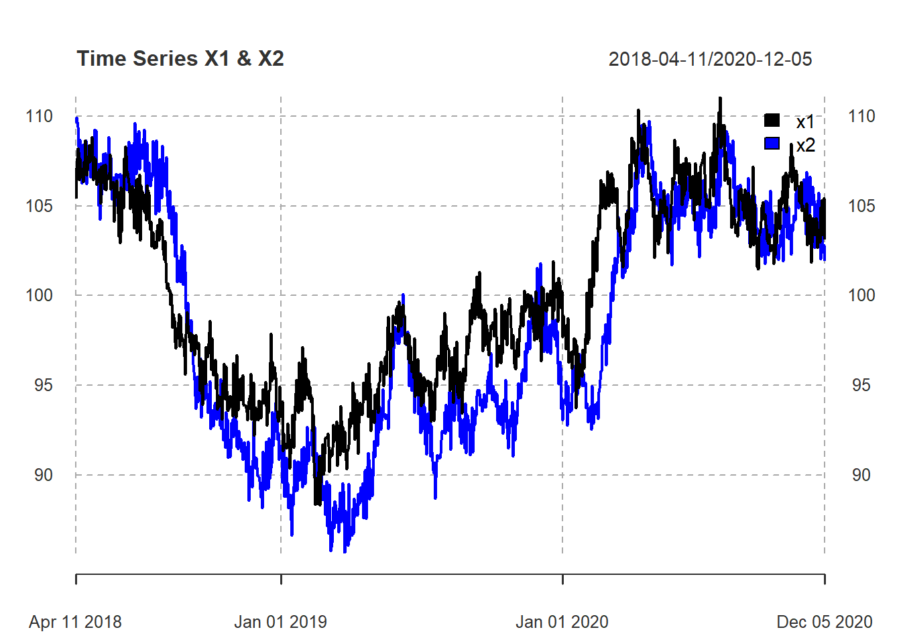
Test cointegration
We perform the tests of integration order.
Testing the order of the time series 1 and its difference:
testdf(variable = Data$x1,
max.augmentations = 3)Loading required package: fUnitRoots
Attaching package: 'fUnitRoots'The following objects are masked from 'package:urca':
punitroot, qunitroot, unitrootTableWarning in adfTest(variable, lags = augmentations, type = "c"): p-value smaller
than printed p-value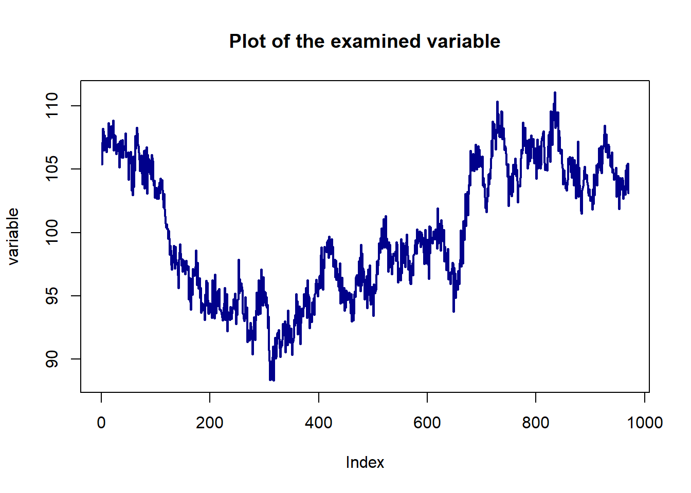
augmentations adf p_adf bgodfrey p_bg
1 0 -3.803259 0.0100000 264.5832974 1.719886e-59
2 1 -2.157827 0.2540868 2.0201728 1.552215e-01
3 2 -2.081606 0.2825813 0.3613083 5.477805e-01
4 3 -1.745467 0.4082435 0.9416019 3.318662e-01The p-bg is very small -> there are auto-correlation in residuals, even when we add the augmentations, we still cant get rid of auto-correlation. Hence, we test for its 1st difference.
testdf(variable = Data$dx1,
max.augmentations = 3)Warning in adfTest(variable, lags = augmentations, type = "c"): p-value smaller
than printed p-value
Warning in adfTest(variable, lags = augmentations, type = "c"): p-value smaller
than printed p-value
Warning in adfTest(variable, lags = augmentations, type = "c"): p-value smaller
than printed p-value
Warning in adfTest(variable, lags = augmentations, type = "c"): p-value smaller
than printed p-value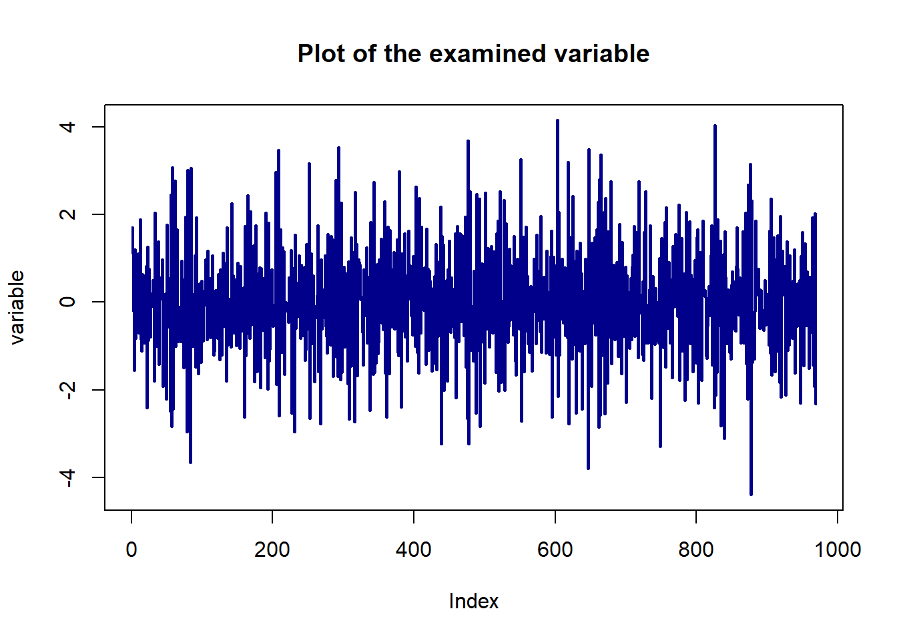
augmentations adf p_adf bgodfrey p_bg
1 0 -57.26435 0.01 2.2435617 0.1341716
2 1 -29.78461 0.01 0.3975488 0.5283579
3 2 -27.06769 0.01 0.9268905 0.3356722
4 3 -17.77244 0.01 0.1955419 0.6583436The p-bg is greater than 5% -> there are no auto-correlations in residual Next, we test the stationary of its 1st lag, by checking p-adf. p-adf is smaller than 5%. We can reject the null in the case of the first differences about non-stationary. Its 1st lag is stationary. We can conclude that the Time Series X1 is integrated of order 1.
Testing the order of the time series 2 and its difference:
testdf(variable = Data$x2,
max.augmentations = 3)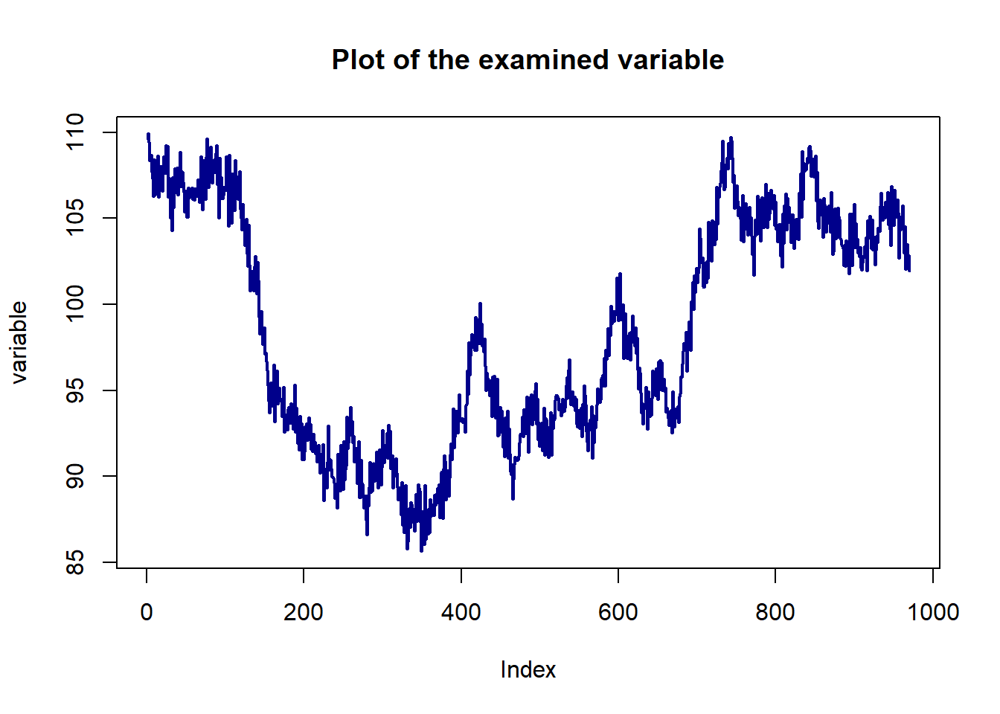
augmentations adf p_adf bgodfrey p_bg
1 0 -3.303984 0.01657912 264.339658 1.943586e-59
2 1 -2.084780 0.28139458 7.143669 7.522910e-03
3 2 -1.876867 0.35912092 2.241790 1.343254e-01
4 3 -1.578488 0.47066701 2.237972 1.346575e-01Similar to X1, the p-bg here is smaller than 5% -> there are auto-correlation in residuals, even when we add the augmentations, we still cant get rid of auto-correlation. Hence, we test for its 1st difference.
testdf(variable = Data$dx2,
max.augmentations = 3)Warning in adfTest(variable, lags = augmentations, type = "c"): p-value smaller
than printed p-value
Warning in adfTest(variable, lags = augmentations, type = "c"): p-value smaller
than printed p-value
Warning in adfTest(variable, lags = augmentations, type = "c"): p-value smaller
than printed p-value
Warning in adfTest(variable, lags = augmentations, type = "c"): p-value smaller
than printed p-value augmentations adf p_adf bgodfrey p_bg
1 0 -56.64415 0.01 7.4813480 0.006234138
2 1 -32.10792 0.01 2.3416031 0.125959872
3 2 -30.35197 0.01 2.2137194 0.136788523
4 3 -18.39947 0.01 0.3831258 0.535935076By adding 1 augmentation, there will be no auto correlation in Residuals. p-adf is greater than 5%, we can reject the null hypothesis in the case the non-stationary of first differences. Its 1st lag is stationary. We can conclude that the Time Series X2 is integrated of order 1.
Conclusion: As a result, both variables has the same order 1: ∼I(1) so in the next step we can check whether they are cointegrated or not.
Estimate Cointegrated Vector
Granger Causality Test
Does X2 granger cause X1?
grangertest(x1 ~ x2,
data = Data,
order = 3) # lag assumedGranger causality test
Model 1: x1 ~ Lags(x1, 1:3) + Lags(x2, 1:3)
Model 2: x1 ~ Lags(x1, 1:3)
Res.Df Df F Pr(>F)
1 960
2 963 -3 0.2821 0.8383p-value is big, we cant reject Ho that X2 does not granger cause X1.
Does X1 granger cause X2?
grangertest(x2 ~ x1,
data = Data,
order = 3) # lag assumedGranger causality test
Model 1: x2 ~ Lags(x2, 1:3) + Lags(x1, 1:3)
Model 2: x2 ~ Lags(x2, 1:3)
Res.Df Df F Pr(>F)
1 960
2 963 -3 28.459 < 2.2e-16 ***
---
Signif. codes: 0 '***' 0.001 '**' 0.01 '*' 0.05 '.' 0.1 ' ' 1p-value is big, we reject Ho, and conclude that X1 does granger cause X2.
Conclusion: At 5% significance level (or 95% confidence level) we have so called one-directional feedback, X1 does granger cause X2.
Linear Model Estimation:
model.coint <- lm(x2 ~ x1, data = Data)Examine the model summary:
summary(model.coint)
Call:
lm(formula = x2 ~ x1, data = Data)
Residuals:
Min 1Q Median 3Q Max
-9.9825 -1.7073 0.0595 1.7705 9.6099
Coefficients:
Estimate Std. Error t value Pr(>|t|)
(Intercept) -16.12716 1.74749 -9.229 <2e-16 ***
x1 1.14496 0.01744 65.648 <2e-16 ***
---
Signif. codes: 0 '***' 0.001 '**' 0.01 '*' 0.05 '.' 0.1 ' ' 1
Residual standard error: 2.867 on 968 degrees of freedom
Multiple R-squared: 0.8166, Adjusted R-squared: 0.8164
F-statistic: 4310 on 1 and 968 DF, p-value: < 2.2e-16Both the intercept and Coefficient for x1 are statistically significant. The model is significantly explained by x1. We further test the stationary of the residuals:
testdf(variable = residuals(model.coint), max.augmentations = 3)Warning in adfTest(variable, lags = augmentations, type = "c"): p-value smaller
than printed p-value
Warning in adfTest(variable, lags = augmentations, type = "c"): p-value smaller
than printed p-value
Warning in adfTest(variable, lags = augmentations, type = "c"): p-value smaller
than printed p-value
Warning in adfTest(variable, lags = augmentations, type = "c"): p-value smaller
than printed p-value augmentations adf p_adf bgodfrey p_bg
1 0 -11.717909 0.01 119.670587 7.468827e-28
2 1 -6.658428 0.01 3.737762 5.319564e-02
3 2 -5.656884 0.01 1.945556 1.630666e-01
4 3 -3.962972 0.01 2.230209 1.353355e-01The ADF test with no augmentations can not be used as the p-value of BG test is less than 5%, suggesting that there is auto-correlation in Residuals.
We choose ADF with 1 augmentations, as p-value of BG test is greater than 5%, there is no auto-correlation in residuals.
Then, the result of ADF has p-value of 0.01, greater than 5%, showing that non-stationarity of residuals is strongly rejected, so residuals are stationary, which means that x1 and x2 are cointegrated.
The cointegrating vector is [1, 16.127 , -1.145]
which defines the cointegrating relationship as: 1 * x2 + 16.127 - 1.145 * x1.
Create first lags of residuals and adding them to the dataset
Data$lresid <- lag.xts(residuals(model.coint))Estimating ECM Model (As the intercept is insignificant, we can remove it.)
model.ecm <- lm(dx2 ~ dx1 + lresid -1, data = Data)
summary(model.ecm)
Call:
lm(formula = dx2 ~ dx1 + lresid - 1, data = Data)
Residuals:
Min 1Q Median 3Q Max
-3.2494 -0.9248 -0.0335 0.8423 4.5604
Coefficients:
Estimate Std. Error t value Pr(>|t|)
dx1 0.02133 0.03276 0.651 0.515
lresid -0.14351 0.01448 -9.911 <2e-16 ***
---
Signif. codes: 0 '***' 0.001 '**' 0.01 '*' 0.05 '.' 0.1 ' ' 1
Residual standard error: 1.263 on 967 degrees of freedom
(1 observation deleted due to missingness)
Multiple R-squared: 0.09399, Adjusted R-squared: 0.09212
F-statistic: 50.16 on 2 and 967 DF, p-value: < 2.2e-16The parameter 0.021 describes a short term relationship between x1 and x2.
The parameter 1.145 describes a long term relationship between x1 and x2.
The value of -0.144 is the estimate of the adjustment coefficient. Its sign is negative and this value means that 14.4% of the unexpected error (increase in gap) will be corrected in the next period, so any unexpected deviation should be corrected finally on average within about 6.9 periods.
4. Applying Box-Jenkins Procedure
4.1 Applying for Time Series X1
Step 1: Model Parameters
par(mfrow = c(2, 1))
acf(Data$dx1,
lag.max = 36,
ylim = c(-0.1, 0.1),
lwd = 5,
col = "dark green",
na.action = na.pass)
pacf(Data$dx1,
lag.max = 36,
lwd = 5, col = "dark green",
na.action = na.pass)par(mfrow = c(1, 1)) # restore the original single panelThe PACF shown is suggestive of an AR(5) model or AR(7). So an initial candidate model is an ARIMA(5,1,0). We also have some variations of this model: ARIMA(5,1,1), ARIMA(4,1,0), ARIMA(3,1,0), ARIMA(7,1,0).
Step 2: Model Estimation
arima510 <- Arima(Data$x1, order = c(5, 1, 0))The above model is not included constant. Let’s include constant into the model:
arima510_2 <- Arima(Data$x1,
order = c(5, 1, 0),
include.constant = TRUE)coeftest(arima510_2)
z test of coefficients:
Estimate Std. Error z value Pr(>|z|)
ar1 -0.5962591 0.0320094 -18.6276 < 2.2e-16 ***
ar2 -0.1745463 0.0367977 -4.7434 2.102e-06 ***
ar3 -0.1253417 0.0370070 -3.3870 0.0007067 ***
ar4 0.1966395 0.0367945 5.3443 9.078e-08 ***
ar5 0.1079200 0.0320471 3.3675 0.0007584 ***
drift -0.0023145 0.0204875 -0.1130 0.9100535
---
Signif. codes: 0 '***' 0.001 '**' 0.01 '*' 0.05 '.' 0.1 ' ' 1Adding the constant did not change the result much for the model, so we keep the model without constant.
Summary the model:
coeftest(arima510)
z test of coefficients:
Estimate Std. Error z value Pr(>|z|)
ar1 -0.596241 0.032009 -18.6272 < 2.2e-16 ***
ar2 -0.174508 0.036796 -4.7426 2.110e-06 ***
ar3 -0.125306 0.037006 -3.3861 0.0007089 ***
ar4 0.196671 0.036794 5.3453 9.028e-08 ***
ar5 0.107940 0.032047 3.3682 0.0007566 ***
---
Signif. codes: 0 '***' 0.001 '**' 0.01 '*' 0.05 '.' 0.1 ' ' 1All the terms/coeffs are significant.
Step 3: Model Diagnostics
plot(resid(arima510),col = "royalblue")Lets check the ACF and the PACF of the Residual values:
plot_ACF_PACF_resids(arima510)The Ljung-Box test:
Box.test(resid(arima510), type = "Ljung-Box", lag = 10)
Box-Ljung test
data: resid(arima510)
X-squared = 7.0428, df = 10, p-value = 0.7214Box.test(resid(arima510), type = "Ljung-Box", lag = 15)
Box-Ljung test
data: resid(arima510)
X-squared = 10.704, df = 15, p-value = 0.7733Box.test(resid(arima510), type = "Ljung-Box", lag = 20)
Box-Ljung test
data: resid(arima510)
X-squared = 14.992, df = 20, p-value = 0.7768Box.test(resid(arima510), type = "Ljung-Box", lag = 25)
Box-Ljung test
data: resid(arima510)
X-squared = 22.683, df = 25, p-value = 0.5961We have large p-values, greater than 5% for the model -> fail to reject Ho about no autocorrelation. Hence, the residuals are white-noise.
Plot graph for Ljung-Box test:
bj_pvalues = c()
for(i in c(1:100)){
bj = Box.test(resid(arima510), type = "Ljung-Box", lag = i)
bj_pvalues = append(bj_pvalues,bj$p.value)
}
plot(bj_pvalues, type='l')
abline(h = 0.05, col='red')Model Variations:
arima511 <- Arima(Data$x1, order = c(5, 1, 1))
arima410 <- Arima(Data$x1, order = c(4, 1, 0))
arima310 <- Arima(Data$x1, order = c(3, 1, 0))
arima313 <- Arima(Data$x1, order = c(3, 1, 3))
arima710 <- Arima(Data$x1, order = c(7, 1, 0))Summary Models
coeftest(arima511)
z test of coefficients:
Estimate Std. Error z value Pr(>|z|)
ar1 -0.852356 0.205187 -4.1540 3.267e-05 ***
ar2 -0.322847 0.126394 -2.5543 0.0106402 *
ar3 -0.173252 0.058333 -2.9700 0.0029776 **
ar4 0.161202 0.053380 3.0199 0.0025288 **
ar5 0.145414 0.038198 3.8068 0.0001408 ***
ma1 0.259179 0.206188 1.2570 0.2087515
---
Signif. codes: 0 '***' 0.001 '**' 0.01 '*' 0.05 '.' 0.1 ' ' 1All the terms/coeffs are significant, except MA1.
coeftest(arima410)
z test of coefficients:
Estimate Std. Error z value Pr(>|z|)
ar1 -0.581875 0.031911 -18.2342 < 2.2e-16 ***
ar2 -0.189843 0.036733 -5.1681 2.364e-07 ***
ar3 -0.145704 0.036726 -3.9673 7.270e-05 ***
ar4 0.134156 0.031959 4.1978 2.695e-05 ***
---
Signif. codes: 0 '***' 0.001 '**' 0.01 '*' 0.05 '.' 0.1 ' ' 1All the terms/coeffs are significant.
coeftest(arima310)
z test of coefficients:
Estimate Std. Error z value Pr(>|z|)
ar1 -0.611857 0.031386 -19.4947 < 2.2e-16 ***
ar2 -0.219115 0.036403 -6.0192 1.753e-09 ***
ar3 -0.227520 0.031410 -7.2436 4.369e-13 ***
---
Signif. codes: 0 '***' 0.001 '**' 0.01 '*' 0.05 '.' 0.1 ' ' 1All the terms/coeffs are significant.
coeftest(arima313)
z test of coefficients:
Estimate Std. Error z value Pr(>|z|)
ar1 -0.709499 0.110391 -6.4272 1.300e-10 ***
ar2 -0.657175 0.122726 -5.3548 8.564e-08 ***
ar3 -0.530463 0.044971 -11.7957 < 2.2e-16 ***
ma1 0.112950 0.117834 0.9586 0.33778
ma2 0.417434 0.090148 4.6306 3.647e-06 ***
ma3 0.131636 0.074994 1.7553 0.07921 .
---
Signif. codes: 0 '***' 0.001 '**' 0.01 '*' 0.05 '.' 0.1 ' ' 1All the terms/coeffs are significant, except MA1, MA3.
coeftest(arima710)
z test of coefficients:
Estimate Std. Error z value Pr(>|z|)
ar1 -0.592921 0.032162 -18.4354 < 2.2e-16 ***
ar2 -0.159731 0.037322 -4.2798 1.871e-05 ***
ar3 -0.122414 0.037605 -3.2553 0.001133 **
ar4 0.180564 0.037351 4.8342 1.337e-06 ***
ar5 0.067051 0.037594 1.7836 0.074497 .
ar6 -0.084751 0.037322 -2.2708 0.023160 *
ar7 -0.050815 0.032199 -1.5782 0.114529
---
Signif. codes: 0 '***' 0.001 '**' 0.01 '*' 0.05 '.' 0.1 ' ' 1All the terms/coeffs are significant, except AR5, AR7.
Model Diagnostics:
plot(resid(arima511),col = "royalblue")plot(resid(arima410),col = "royalblue")plot(resid(arima310),col = "royalblue")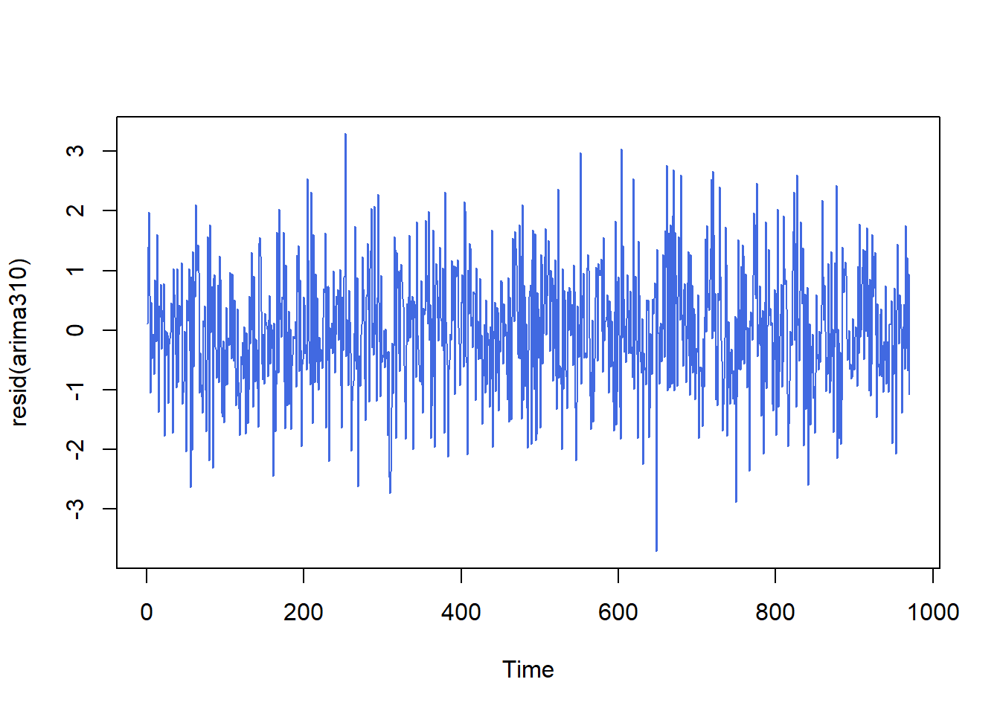
plot(resid(arima313), col = "royalblue3")plot(resid(arima710),col = "royalblue")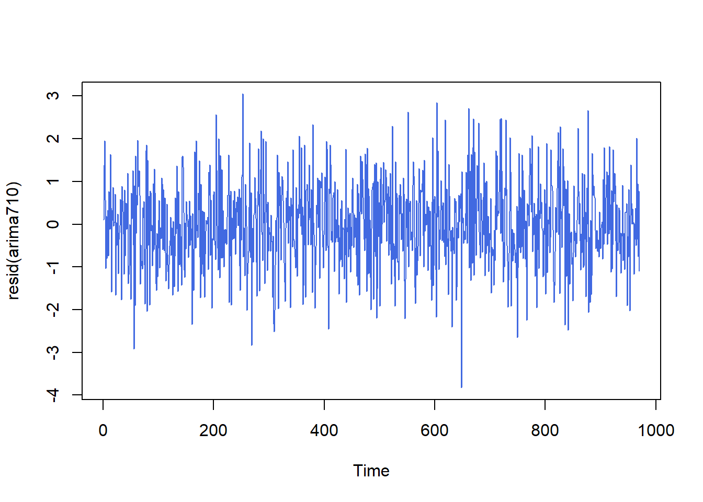
Plot the ACF, PACF for residuals:
plot_ACF_PACF_resids(arima511)plot_ACF_PACF_resids(arima410)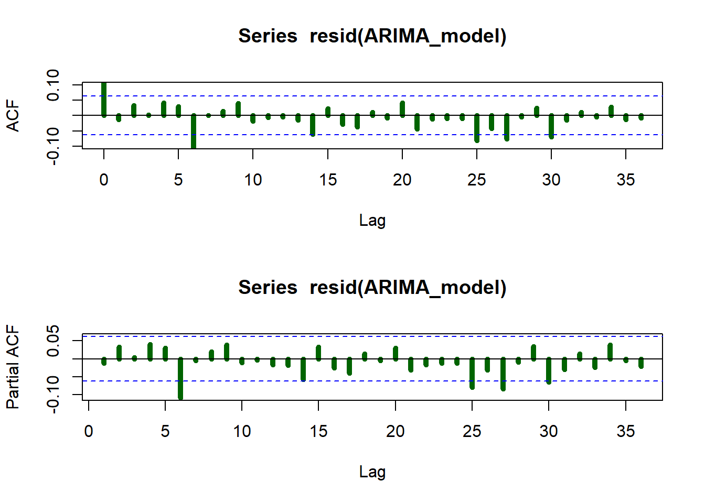
plot_ACF_PACF_resids(arima310)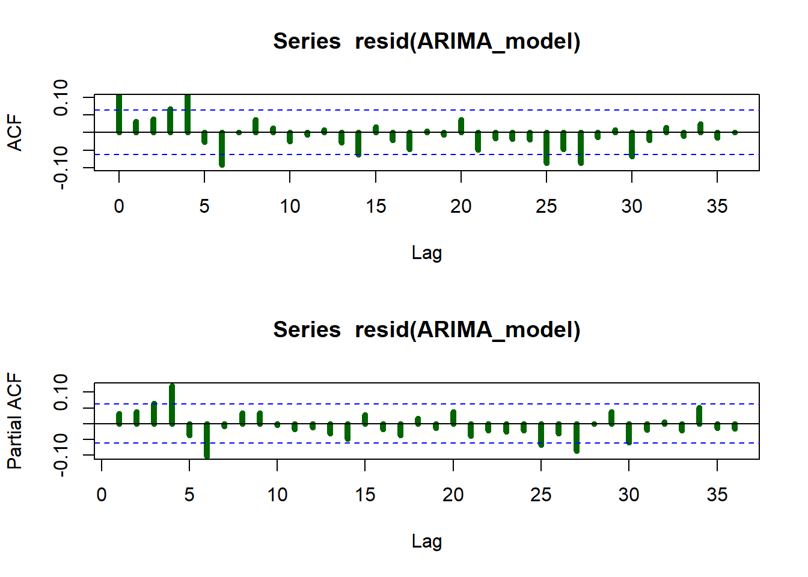
plot_ACF_PACF_resids(arima313)plot_ACF_PACF_resids(arima710)The Ljung-Box test:
Box.test(resid(arima511), type = "Ljung-Box", lag = 10)
Box-Ljung test
data: resid(arima511)
X-squared = 5.2863, df = 10, p-value = 0.8713Box.test(resid(arima511), type = "Ljung-Box", lag = 15)
Box-Ljung test
data: resid(arima511)
X-squared = 8.8698, df = 15, p-value = 0.8842Box.test(resid(arima511), type = "Ljung-Box", lag = 20)
Box-Ljung test
data: resid(arima511)
X-squared = 13.267, df = 20, p-value = 0.8656Box.test(resid(arima511), type = "Ljung-Box", lag = 25)
Box-Ljung test
data: resid(arima511)
X-squared = 21.201, df = 25, p-value = 0.6813Box.test(resid(arima410), type = "Ljung-Box", lag = 10)
Box-Ljung test
data: resid(arima410)
X-squared = 16.975, df = 10, p-value = 0.07492Box.test(resid(arima410), type = "Ljung-Box", lag = 15)
Box-Ljung test
data: resid(arima410)
X-squared = 21.351, df = 15, p-value = 0.126Box.test(resid(arima410), type = "Ljung-Box", lag = 20)
Box-Ljung test
data: resid(arima410)
X-squared = 25.428, df = 20, p-value = 0.1856Box.test(resid(arima410), type = "Ljung-Box", lag = 25)
Box-Ljung test
data: resid(arima410)
X-squared = 34.231, df = 25, p-value = 0.1031Box.test(resid(arima310), type = "Ljung-Box", lag = 10)
Box-Ljung test
data: resid(arima310)
X-squared = 32.859, df = 10, p-value = 0.0002877Box.test(resid(arima310), type = "Ljung-Box", lag = 15)
Box-Ljung test
data: resid(arima310)
X-squared = 37.895, df = 15, p-value = 0.0009351Box.test(resid(arima310), type = "Ljung-Box", lag = 20)
Box-Ljung test
data: resid(arima310)
X-squared = 41.845, df = 20, p-value = 0.002897Box.test(resid(arima310), type = "Ljung-Box", lag = 25)
Box-Ljung test
data: resid(arima310)
X-squared = 52.643, df = 25, p-value = 0.0009933We have very low p-values, greater than 5% -> Reject Ho about no autocorrelation. Hence, the residual is auto-correlated in model ARIMA(3,1,0).
Box.test(resid(arima313), type = "Ljung-Box", lag = 10)
Box-Ljung test
data: resid(arima313)
X-squared = 2.5635, df = 10, p-value = 0.9899Box.test(resid(arima313), type = "Ljung-Box", lag = 15)
Box-Ljung test
data: resid(arima313)
X-squared = 5.8069, df = 15, p-value = 0.9828Box.test(resid(arima313), type = "Ljung-Box", lag = 20)
Box-Ljung test
data: resid(arima313)
X-squared = 10.277, df = 20, p-value = 0.9629Box.test(resid(arima313), type = "Ljung-Box", lag = 25)
Box-Ljung test
data: resid(arima313)
X-squared = 18.939, df = 25, p-value = 0.8001Box.test(resid(arima710), type = "Ljung-Box", lag = 10)
Box-Ljung test
data: resid(arima710)
X-squared = 1.5401, df = 10, p-value = 0.9988Box.test(resid(arima710), type = "Ljung-Box", lag = 15)
Box-Ljung test
data: resid(arima710)
X-squared = 4.7483, df = 15, p-value = 0.9941Box.test(resid(arima710), type = "Ljung-Box", lag = 20)
Box-Ljung test
data: resid(arima710)
X-squared = 8.7753, df = 20, p-value = 0.9854Box.test(resid(arima710), type = "Ljung-Box", lag = 25)
Box-Ljung test
data: resid(arima710)
X-squared = 17.31, df = 25, p-value = 0.8702We have very large p-values, greater than 5% for all models (except ARIMA(3,1,0)) -> fail to reject Ho about no autocorrelation. Hence, the residuals are white-noise.
Step 4. Evaluate Model
AIC(arima510, arima511,
arima410,
arima310, arima313,
arima710) df AIC
arima510 6 2791.488
arima511 7 2791.961
arima410 5 2800.763
arima310 4 2816.218
arima313 7 2789.785
arima710 8 2790.102Model ARIMA(3,1,3) returns the lowest AIC test.
BIC(arima510, arima511,
arima410,
arima310, arima313,
arima710) df BIC
arima510 6 2820.745
arima511 7 2826.095
arima410 5 2825.144
arima310 4 2835.723
arima313 7 2823.919
arima710 8 2829.112Model ARIMA(5,1,0) returns the lowest BIC test; Model ARIMA(3,1,3) comes second.
However, we should prefer AIC over BIC.
Conclusion: From the perspective of sensibility, the ARIMA(3,1,3) seems to be the most attractive one: all terms are significant (except MA1, MA3), residuals are white noise and we observe low values of information criteria (IC).
Hence, we use ARIMA(3,1,3) for forecasting Time Series X1.
4.1 Applying for Time Series X2
Step 1: Model Parameters
par(mfrow = c(2, 1))
acf(Data$dx2,
lag.max = 36,
ylim = c(-0.1, 0.1),
lwd = 5,
col = "dark green",
na.action = na.pass)
pacf(Data$dx2,
lag.max = 36,
lwd = 5, col = "dark green",
na.action = na.pass)
par(mfrow = c(1, 1)) # restore the original single panelThe PACF shown is suggestive of an AR(5) model. So an initial candidate model is an ARIMA(5,1,0). We also have some variations of this model: ARIMA(5,1,1), ARIMA(4,1,0), ARIMA(3,1,0).
Step 2: Model Estimation
arima510_x2 <- Arima(Data$x2, order = c(5, 1, 0)) The above model is not included constant. Let’s include constant into the model:
arima510_2_x2 <- Arima(Data$x2,
order = c(5, 1, 0),
include.constant = TRUE)Adding the constant did not change the result much for the model, so we keep the model without constant.
Summary Result:
coeftest(arima510_x2)
z test of coefficients:
Estimate Std. Error z value Pr(>|z|)
ar1 -0.644866 0.031897 -20.2169 < 2.2e-16 ***
ar2 -0.269632 0.037238 -7.2408 4.462e-13 ***
ar3 -0.152155 0.037949 -4.0095 6.084e-05 ***
ar4 0.239044 0.037248 6.4176 1.385e-10 ***
ar5 0.121498 0.031871 3.8122 0.0001377 ***
---
Signif. codes: 0 '***' 0.001 '**' 0.01 '*' 0.05 '.' 0.1 ' ' 1All parameters are significant.
Step 3: Model Diagnostics
plot(resid(arima510_x2), col = "royalblue")
Check the ACF and the PACF of the Residual values:
plot_ACF_PACF_resids(arima510_2)The Ljung-Box test:
Box.test(resid(arima510_x2), type = "Ljung-Box", lag = 10)
Box-Ljung test
data: resid(arima510_x2)
X-squared = 2.6884, df = 10, p-value = 0.9878Box.test(resid(arima510_x2), type = "Ljung-Box", lag = 15)
Box-Ljung test
data: resid(arima510_x2)
X-squared = 8.8657, df = 15, p-value = 0.8844Box.test(resid(arima510_x2), type = "Ljung-Box", lag = 20)
Box-Ljung test
data: resid(arima510_x2)
X-squared = 16.452, df = 20, p-value = 0.6882Box.test(resid(arima510_x2), type = "Ljung-Box", lag = 25)
Box-Ljung test
data: resid(arima510_x2)
X-squared = 19.863, df = 25, p-value = 0.754-> Very large p-values: The residual is white-noise
Plot graph for Ljung-Box test:
bj_pvalues = c()
for(i in c(1:100)){
bj = Box.test(resid(arima510_x2), type = "Ljung-Box", lag = i)
bj_pvalues = append(bj_pvalues,bj$p.value)
}
plot(bj_pvalues, type='l')
abline(h=0.05, col='red')Model Variations
arima511_x2 <- Arima(Data$x2, order = c(5, 1, 1))
arima410_x2 <- Arima(Data$x2, order = c(4, 1, 0))
arima310_x2 <- Arima(Data$x2, order = c(3, 1, 0))
arima313_x2 <- Arima(Data$x2, order = c(3, 1, 3))Summary Result:
coeftest(arima511_x2)
z test of coefficients:
Estimate Std. Error z value Pr(>|z|)
ar1 -0.750998 0.210052 -3.5753 0.0003498 ***
ar2 -0.335858 0.136327 -2.4636 0.0137545 *
ar3 -0.183105 0.073713 -2.4840 0.0129914 *
ar4 0.219352 0.056620 3.8741 0.0001070 ***
ar5 0.139151 0.044528 3.1251 0.0017777 **
ma1 0.107671 0.211118 0.5100 0.6100480
---
Signif. codes: 0 '***' 0.001 '**' 0.01 '*' 0.05 '.' 0.1 ' ' 1All parameters are significant, except MA1.
coeftest(arima410_x2)
z test of coefficients:
Estimate Std. Error z value Pr(>|z|)
ar1 -0.624896 0.031703 -19.7112 < 2.2e-16 ***
ar2 -0.292513 0.037034 -7.8985 2.824e-15 ***
ar3 -0.187860 0.037057 -5.0695 3.990e-07 ***
ar4 0.162862 0.031675 5.1417 2.723e-07 ***
---
Signif. codes: 0 '***' 0.001 '**' 0.01 '*' 0.05 '.' 0.1 ' ' 1All parameters are significant.
coeftest(arima310_x2)
z test of coefficients:
Estimate Std. Error z value Pr(>|z|)
ar1 -0.673600 0.030668 -21.9643 < 2.2e-16 ***
ar2 -0.349818 0.035809 -9.7691 < 2.2e-16 ***
ar3 -0.297916 0.030659 -9.7170 < 2.2e-16 ***
---
Signif. codes: 0 '***' 0.001 '**' 0.01 '*' 0.05 '.' 0.1 ' ' 1All parameters are significant.
coeftest(arima313_x2)
z test of coefficients:
Estimate Std. Error z value Pr(>|z|)
ar1 -0.792133 0.063771 -12.4214 < 2.2e-16 ***
ar2 -0.768797 0.068468 -11.2285 < 2.2e-16 ***
ar3 -0.566525 0.040594 -13.9560 < 2.2e-16 ***
ma1 0.151590 0.072020 2.1048 0.03531 *
ma2 0.417740 0.079320 5.2665 1.391e-07 ***
ma3 0.105005 0.054887 1.9131 0.05573 .
---
Signif. codes: 0 '***' 0.001 '**' 0.01 '*' 0.05 '.' 0.1 ' ' 1All parameters are significant, except MA3.
Model Diagnostic:
plot(resid(arima511_x2), col = "royalblue")plot(resid(arima410_x2), col = "royalblue")plot(resid(arima310_x2), col = "royalblue")plot(resid(arima313_x2), col = "royalblue")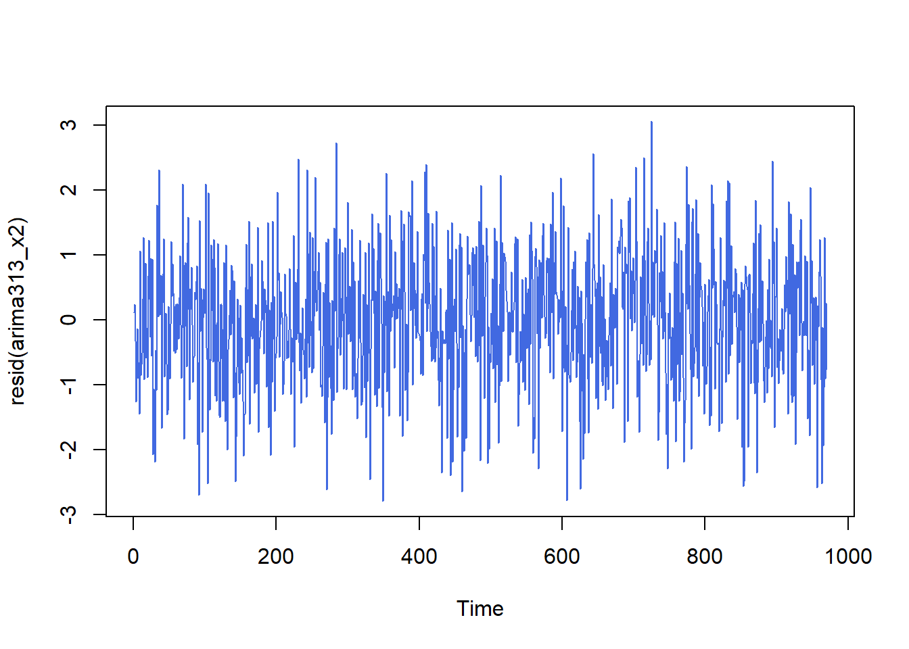
Plot the ACF, PACF for residuals:
plot_ACF_PACF_resids(arima511_x2)plot_ACF_PACF_resids(arima410_x2)plot_ACF_PACF_resids(arima310_x2)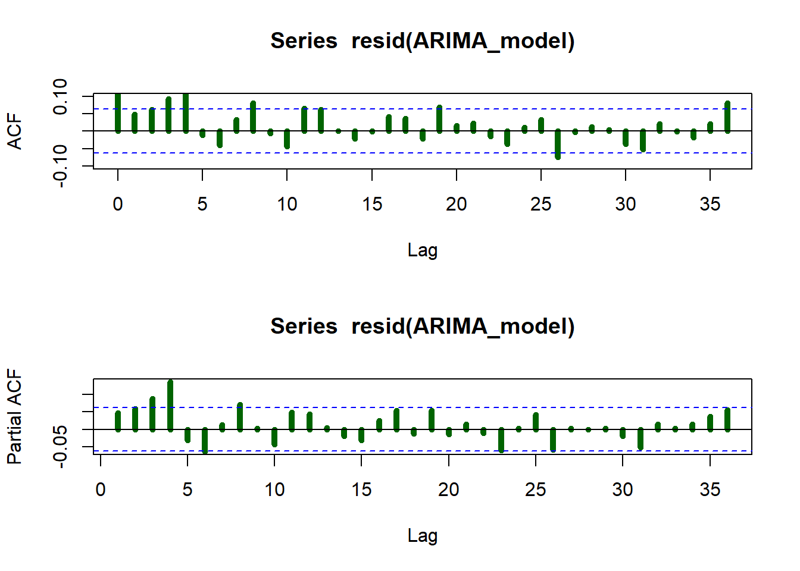
plot_ACF_PACF_resids(arima313_x2)The Ljung-Box test:
Box.test(resid(arima511_x2), type = "Ljung-Box", lag = 10)
Box-Ljung test
data: resid(arima511_x2)
X-squared = 2.7223, df = 10, p-value = 0.9872Box.test(resid(arima511_x2), type = "Ljung-Box", lag = 15)
Box-Ljung test
data: resid(arima511_x2)
X-squared = 8.7444, df = 15, p-value = 0.8905Box.test(resid(arima511_x2), type = "Ljung-Box", lag = 20)
Box-Ljung test
data: resid(arima511_x2)
X-squared = 16.459, df = 20, p-value = 0.6878Box.test(resid(arima511_x2), type = "Ljung-Box", lag = 25)
Box-Ljung test
data: resid(arima511_x2)
X-squared = 19.927, df = 25, p-value = 0.7506-> Very large p-values: The residual is white-noise
Box.test(resid(arima410_x2), type = "Ljung-Box", lag = 10)
Box-Ljung test
data: resid(arima410_x2)
X-squared = 15.929, df = 10, p-value = 0.1017Box.test(resid(arima410_x2), type = "Ljung-Box", lag = 15)
Box-Ljung test
data: resid(arima410_x2)
X-squared = 23.17, df = 15, p-value = 0.08059Box.test(resid(arima410_x2), type = "Ljung-Box", lag = 20)
Box-Ljung test
data: resid(arima410_x2)
X-squared = 32.02, df = 20, p-value = 0.04308Box.test(resid(arima410_x2), type = "Ljung-Box", lag = 25)
Box-Ljung test
data: resid(arima410_x2)
X-squared = 35.549, df = 25, p-value = 0.07872-> Not so large p-values: The residual is not really a white-noise for lag20.
Box.test(resid(arima310_x2), type = "Ljung-Box", lag = 10)
Box-Ljung test
data: resid(arima310_x2)
X-squared = 46.307, df = 10, p-value = 1.262e-06Box.test(resid(arima310_x2), type = "Ljung-Box", lag = 15)
Box-Ljung test
data: resid(arima310_x2)
X-squared = 54.692, df = 15, p-value = 2.012e-06Box.test(resid(arima310_x2), type = "Ljung-Box", lag = 20)
Box-Ljung test
data: resid(arima310_x2)
X-squared = 63.082, df = 20, p-value = 2.35e-06Box.test(resid(arima310_x2), type = "Ljung-Box", lag = 25)
Box-Ljung test
data: resid(arima310_x2)
X-squared = 66.416, df = 25, p-value = 1.292e-05-> Very small p-values: The residual is auto-correlated
Box.test(resid(arima313_x2), type = "Ljung-Box", lag = 10)
Box-Ljung test
data: resid(arima313_x2)
X-squared = 2.7105, df = 10, p-value = 0.9874Box.test(resid(arima313_x2), type = "Ljung-Box", lag = 15)
Box-Ljung test
data: resid(arima313_x2)
X-squared = 7.035, df = 15, p-value = 0.9567Box.test(resid(arima313_x2), type = "Ljung-Box", lag = 20)
Box-Ljung test
data: resid(arima313_x2)
X-squared = 13.67, df = 20, p-value = 0.8468Box.test(resid(arima313_x2), type = "Ljung-Box", lag = 25)
Box-Ljung test
data: resid(arima313_x2)
X-squared = 16.922, df = 25, p-value = 0.8846-> Very large p-values: The residual is white-noise
Step 4. Evaluate Model
AIC(arima510_x2,arima511_x2,
arima410_x2,
arima310_x2, arima313_x2) df AIC
arima510_x2 6 2822.100
arima511_x2 7 2823.846
arima410_x2 5 2834.519
arima310_x2 4 2858.586
arima313_x2 7 2821.547-> Suggestion model: arima313_x2 - ARIMA(3,1,3)
BIC(arima510_x2,arima511_x2,
arima410_x2,
arima310_x2, arima313_x2) df BIC
arima510_x2 6 2851.357
arima511_x2 7 2857.980
arima410_x2 5 2858.900
arima310_x2 4 2878.091
arima313_x2 7 2855.681-> Suggestion model: arima510_x2 - ARIMA(5,1,0)
Conclusion: From the perspective of sensibility, the ARIMA(5,1,0) seems to be the most attractive one:
All terms are significant, residuals are white noise and we observe low values of information criteria (IC).
Hence, we use ARIMA(5,1,0) for forecasting Time Series X2.
4.3 ARIMA Forecast for X1 & X2
Import Data Forecast:
out_of_sample <-read.csv("Out_of_sample.csv",header = TRUE, dec = ".")class(out_of_sample)[1] "data.frame"Change Date
out_of_sample$X <- as.Date(out_of_sample$X,
format = "%d-%m-%y") Create xts objects
out_of_sample <- xts(out_of_sample[,-1], out_of_sample$X)Assign forecast X1 to object oos_x1
oos_x1 <- out_of_sample$x1
oos_x1 x1
2020-12-06 104.6044
2020-12-07 103.6145
2020-12-08 102.8175
2020-12-09 101.3033
2020-12-10 102.4395
2020-12-11 103.7279
2020-12-12 102.8575
2020-12-13 103.0086
2020-12-14 102.8093
2020-12-15 103.5626
2020-12-16 102.5536
2020-12-17 104.9300
2020-12-18 104.3301
2020-12-19 104.1219
2020-12-20 103.8526
2020-12-21 105.4009
2020-12-22 105.4246
2020-12-23 103.2777
2020-12-24 102.4349
2020-12-25 103.7180
2020-12-26 103.1486
2020-12-27 101.4948
2020-12-28 101.8467
2020-12-29 102.5797
2020-12-30 103.6637
2020-12-31 101.0638
2021-01-01 100.5104
2021-01-02 102.3766
2021-01-03 101.5015
2021-01-04 102.1252Forecast for X1
tail(Data, 12) x1 x2 x3 x4 x5 x6 x7
2020-11-24 104.3013 104.3355 140.7577 119.5638 114.1140 154.3604 153.2460
2020-11-25 104.1657 105.1016 141.4567 123.3867 113.5237 154.0791 153.7337
2020-11-26 102.6537 104.9208 140.7758 124.4254 112.9245 156.0804 154.2043
2020-11-27 103.2396 105.7320 140.4508 124.7773 114.9400 157.1855 155.4884
2020-11-28 103.6736 102.9653 141.7815 123.5558 115.1752 155.7699 152.7099
2020-11-29 102.9761 104.5524 140.6848 124.9638 113.3780 155.9102 157.3308
2020-11-30 104.9255 102.0271 140.3751 123.5249 114.2484 154.4416 154.2609
2020-12-01 103.4802 102.7281 139.8656 124.8164 115.4927 153.0521 156.7857
2020-12-02 105.3159 103.5042 141.6949 125.9501 113.2420 154.6303 154.1157
2020-12-03 103.3953 102.4242 142.7535 126.2372 112.9752 156.1399 154.1009
2020-12-04 105.4361 102.8317 141.2816 125.7234 115.3071 156.6897 154.6461
2020-12-05 103.1150 101.9375 141.2156 125.2633 115.3152 156.7915 155.2692
x8 x9 x10 dx1 dx2 lresid
2020-11-24 187.7767 45.31686 160.3198 0.2285039 -0.1819140 1.4851947
2020-11-25 188.6371 47.13610 158.2888 -0.1355977 0.7660739 1.0416523
2020-11-26 189.0998 46.20568 159.0346 -1.5119562 -0.1807765 1.9629805
2020-11-27 188.8698 45.66828 158.1373 0.5859083 0.8111557 3.5133371
2020-11-28 187.4831 44.49097 158.9628 0.4339784 -2.7666582 3.6536498
2020-11-29 189.1835 43.55099 158.6368 -0.6975379 1.5870744 0.3901026
2020-11-30 190.5172 42.14053 158.4194 1.9494719 -2.5252541 2.7758317
2020-12-01 187.9916 41.04858 158.8728 -1.4453358 0.7009970 -1.9814946
2020-12-02 189.1746 41.14571 157.2235 1.8357427 0.7760933 0.3743577
2020-12-03 191.1886 41.65493 160.8470 -1.9206885 -1.0800434 -0.9514055
2020-12-04 190.2398 42.99143 159.4651 2.0407973 0.4074824 0.1676674
2020-12-05 188.6125 41.27213 158.3798 -2.3210339 -0.8941768 -1.7614866forecasts_x1 <- forecast(arima313, # model for prediction
h = 30) # how many periods outside the sample
forecasts_x1 Point Forecast Lo 80 Hi 80 Lo 95 Hi 95
971 104.5678 103.26545 105.8702 102.57601 106.5596
972 103.6466 102.24226 105.0510 101.49883 105.7944
973 104.4368 102.83785 106.0357 101.99142 106.8822
974 103.7109 102.00794 105.4139 101.10645 106.3153
975 104.1953 102.23661 106.1540 101.19974 107.1909
976 103.9095 101.83371 105.9853 100.73484 107.0842
977 104.1790 101.97856 106.3794 100.81371 107.5443
978 103.9187 101.61508 106.2222 100.39564 107.4417
979 104.0779 101.62708 106.5287 100.32971 107.8260
980 103.9930 101.43417 106.5519 100.07959 107.9065
981 104.0867 101.42542 106.7480 100.01662 108.1568
982 103.9915 101.23499 106.7481 99.77576 108.2073
983 104.0425 101.17663 106.9084 99.65953 108.4255
984 104.0192 101.05724 106.9812 99.48927 108.5491
985 104.0527 101.00037 107.1051 99.38456 108.7209
986 104.0172 100.87791 107.1565 99.21605 108.8184
987 104.0327 100.80217 107.2633 99.09200 108.9735
988 104.0273 100.71073 107.3438 98.95505 109.0995
989 104.0398 100.64126 107.4383 98.84219 109.2374
990 104.0263 100.54797 107.5046 98.70667 109.3459
991 104.0305 100.47156 107.5895 98.58755 109.4735
992 104.0298 100.39268 107.6668 98.46733 109.5922
993 104.0347 100.32216 107.7472 98.35688 109.7125
994 104.0294 100.24312 107.8157 98.23877 109.8201
995 104.0303 100.17050 107.8902 98.12723 109.9334
996 104.0305 100.09875 107.9623 98.01739 110.0437
997 104.0326 100.03065 108.0345 97.91216 110.1530
998 104.0305 99.95974 108.1013 97.80481 110.2562
999 104.0305 99.89157 108.1695 97.70053 110.3605
1000 104.0308 99.82477 108.2368 97.59824 110.4633Extract the forecast points
forecasts_x1$meanTime Series:
Start = 971
End = 1000
Frequency = 1
[1] 104.5678 103.6466 104.4368 103.7109 104.1953 103.9095 104.1790 103.9187
[9] 104.0779 103.9930 104.0867 103.9915 104.0425 104.0192 104.0527 104.0172
[17] 104.0327 104.0273 104.0398 104.0263 104.0305 104.0298 104.0347 104.0294
[25] 104.0303 104.0305 104.0326 104.0305 104.0305 104.0308class(forecasts_x1$mean)[1] "ts"It is a ts object, not xts! However, the xts objects are more convenient and modern. In terms of plotting the real data and forecast data to compare.
forecasts_x1$lowerTime Series:
Start = 971
End = 1000
Frequency = 1
80% 95%
971 103.26545 102.57601
972 102.24226 101.49883
973 102.83785 101.99142
974 102.00794 101.10645
975 102.23661 101.19974
976 101.83371 100.73484
977 101.97856 100.81371
978 101.61508 100.39564
979 101.62708 100.32971
980 101.43417 100.07959
981 101.42542 100.01662
982 101.23499 99.77576
983 101.17663 99.65953
984 101.05724 99.48927
985 101.00037 99.38456
986 100.87791 99.21605
987 100.80217 99.09200
988 100.71073 98.95505
989 100.64126 98.84219
990 100.54797 98.70667
991 100.47156 98.58755
992 100.39268 98.46733
993 100.32216 98.35688
994 100.24312 98.23877
995 100.17050 98.12723
996 100.09875 98.01739
997 100.03065 97.91216
998 99.95974 97.80481
999 99.89157 97.70053
1000 99.82477 97.59824forecasts_x1$upperTime Series:
Start = 971
End = 1000
Frequency = 1
80% 95%
971 105.8702 106.5596
972 105.0510 105.7944
973 106.0357 106.8822
974 105.4139 106.3153
975 106.1540 107.1909
976 105.9853 107.0842
977 106.3794 107.5443
978 106.2222 107.4417
979 106.5287 107.8260
980 106.5519 107.9065
981 106.7480 108.1568
982 106.7481 108.2073
983 106.9084 108.4255
984 106.9812 108.5491
985 107.1051 108.7209
986 107.1565 108.8184
987 107.2633 108.9735
988 107.3438 109.0995
989 107.4383 109.2374
990 107.5046 109.3459
991 107.5895 109.4735
992 107.6668 109.5922
993 107.7472 109.7125
994 107.8157 109.8201
995 107.8902 109.9334
996 107.9623 110.0437
997 108.0345 110.1530
998 108.1013 110.2562
999 108.1695 110.3605
1000 108.2368 110.4633Create xts object: (We use the second column (95% confidence interval))
forecasts_x1_data <- data.frame(f_mean = as.numeric(forecasts_x1$mean),
f_lower = as.numeric(forecasts_x1$lower[, 2]),
f_upper = as.numeric(forecasts_x1$upper[, 2]))head(forecasts_x1_data,30) f_mean f_lower f_upper
1 104.5678 102.57601 106.5596
2 103.6466 101.49883 105.7944
3 104.4368 101.99142 106.8822
4 103.7109 101.10645 106.3153
5 104.1953 101.19974 107.1909
6 103.9095 100.73484 107.0842
7 104.1790 100.81371 107.5443
8 103.9187 100.39564 107.4417
9 104.0779 100.32971 107.8260
10 103.9930 100.07959 107.9065
11 104.0867 100.01662 108.1568
12 103.9915 99.77576 108.2073
13 104.0425 99.65953 108.4255
14 104.0192 99.48927 108.5491
15 104.0527 99.38456 108.7209
16 104.0172 99.21605 108.8184
17 104.0327 99.09200 108.9735
18 104.0273 98.95505 109.0995
19 104.0398 98.84219 109.2374
20 104.0263 98.70667 109.3459
21 104.0305 98.58755 109.4735
22 104.0298 98.46733 109.5922
23 104.0347 98.35688 109.7125
24 104.0294 98.23877 109.8201
25 104.0303 98.12723 109.9334
26 104.0305 98.01739 110.0437
27 104.0326 97.91216 110.1530
28 104.0305 97.80481 110.2562
29 104.0305 97.70053 110.3605
30 104.0308 97.59824 110.4633Adding real value X1 below the current Dataset:
Data_x1 <- rbind(Data[, "x1"], oos_x1)
tail(Data_x1, n = 40) x1
2020-11-26 102.6537
2020-11-27 103.2396
2020-11-28 103.6736
2020-11-29 102.9761
2020-11-30 104.9255
2020-12-01 103.4802
2020-12-02 105.3159
2020-12-03 103.3953
2020-12-04 105.4361
2020-12-05 103.1150
2020-12-06 104.6044
2020-12-07 103.6145
2020-12-08 102.8175
2020-12-09 101.3033
2020-12-10 102.4395
2020-12-11 103.7279
2020-12-12 102.8575
2020-12-13 103.0086
2020-12-14 102.8093
2020-12-15 103.5626
2020-12-16 102.5536
2020-12-17 104.9300
2020-12-18 104.3301
2020-12-19 104.1219
2020-12-20 103.8526
2020-12-21 105.4009
2020-12-22 105.4246
2020-12-23 103.2777
2020-12-24 102.4349
2020-12-25 103.7180
2020-12-26 103.1486
2020-12-27 101.4948
2020-12-28 101.8467
2020-12-29 102.5797
2020-12-30 103.6637
2020-12-31 101.0638
2021-01-01 100.5104
2021-01-02 102.3766
2021-01-03 101.5015
2021-01-04 102.1252Turn Forecast with Index into Forecast with Date
forecasts_x1_xts <- xts(forecasts_x1_data,
order.by = index(oos_x1))
forecasts_x1_xts f_mean f_lower f_upper
2020-12-06 104.5678 102.57601 106.5596
2020-12-07 103.6466 101.49883 105.7944
2020-12-08 104.4368 101.99142 106.8822
2020-12-09 103.7109 101.10645 106.3153
2020-12-10 104.1953 101.19974 107.1909
2020-12-11 103.9095 100.73484 107.0842
2020-12-12 104.1790 100.81371 107.5443
2020-12-13 103.9187 100.39564 107.4417
2020-12-14 104.0779 100.32971 107.8260
2020-12-15 103.9930 100.07959 107.9065
2020-12-16 104.0867 100.01662 108.1568
2020-12-17 103.9915 99.77576 108.2073
2020-12-18 104.0425 99.65953 108.4255
2020-12-19 104.0192 99.48927 108.5491
2020-12-20 104.0527 99.38456 108.7209
2020-12-21 104.0172 99.21605 108.8184
2020-12-22 104.0327 99.09200 108.9735
2020-12-23 104.0273 98.95505 109.0995
2020-12-24 104.0398 98.84219 109.2374
2020-12-25 104.0263 98.70667 109.3459
2020-12-26 104.0305 98.58755 109.4735
2020-12-27 104.0298 98.46733 109.5922
2020-12-28 104.0347 98.35688 109.7125
2020-12-29 104.0294 98.23877 109.8201
2020-12-30 104.0303 98.12723 109.9334
2020-12-31 104.0305 98.01739 110.0437
2021-01-01 104.0326 97.91216 110.1530
2021-01-02 104.0305 97.80481 110.2562
2021-01-03 104.0305 97.70053 110.3605
2021-01-04 104.0308 97.59824 110.4633Merge it together with the original data
Data_x1_combined <- merge(Data_x1, forecasts_x1_xts)
head(Data_x1_combined) x1 f_mean f_lower f_upper
2018-04-11 105.3882 NA NA NA
2018-04-12 107.1097 NA NA NA
2018-04-13 108.2144 NA NA NA
2018-04-14 108.0136 NA NA NA
2018-04-15 106.4532 NA NA NA
2018-04-16 107.6660 NA NA NAtail(Data_x1_combined,40) x1 f_mean f_lower f_upper
2020-11-26 102.6537 NA NA NA
2020-11-27 103.2396 NA NA NA
2020-11-28 103.6736 NA NA NA
2020-11-29 102.9761 NA NA NA
2020-11-30 104.9255 NA NA NA
2020-12-01 103.4802 NA NA NA
2020-12-02 105.3159 NA NA NA
2020-12-03 103.3953 NA NA NA
2020-12-04 105.4361 NA NA NA
2020-12-05 103.1150 NA NA NA
2020-12-06 104.6044 104.5678 102.57601 106.5596
2020-12-07 103.6145 103.6466 101.49883 105.7944
2020-12-08 102.8175 104.4368 101.99142 106.8822
2020-12-09 101.3033 103.7109 101.10645 106.3153
2020-12-10 102.4395 104.1953 101.19974 107.1909
2020-12-11 103.7279 103.9095 100.73484 107.0842
2020-12-12 102.8575 104.1790 100.81371 107.5443
2020-12-13 103.0086 103.9187 100.39564 107.4417
2020-12-14 102.8093 104.0779 100.32971 107.8260
2020-12-15 103.5626 103.9930 100.07959 107.9065
2020-12-16 102.5536 104.0867 100.01662 108.1568
2020-12-17 104.9300 103.9915 99.77576 108.2073
2020-12-18 104.3301 104.0425 99.65953 108.4255
2020-12-19 104.1219 104.0192 99.48927 108.5491
2020-12-20 103.8526 104.0527 99.38456 108.7209
2020-12-21 105.4009 104.0172 99.21605 108.8184
2020-12-22 105.4246 104.0327 99.09200 108.9735
2020-12-23 103.2777 104.0273 98.95505 109.0995
2020-12-24 102.4349 104.0398 98.84219 109.2374
2020-12-25 103.7180 104.0263 98.70667 109.3459
2020-12-26 103.1486 104.0305 98.58755 109.4735
2020-12-27 101.4948 104.0298 98.46733 109.5922
2020-12-28 101.8467 104.0347 98.35688 109.7125
2020-12-29 102.5797 104.0294 98.23877 109.8201
2020-12-30 103.6637 104.0303 98.12723 109.9334
2020-12-31 101.0638 104.0305 98.01739 110.0437
2021-01-01 100.5104 104.0326 97.91216 110.1530
2021-01-02 102.3766 104.0305 97.80481 110.2562
2021-01-03 101.5015 104.0305 97.70053 110.3605
2021-01-04 102.1252 104.0308 97.59824 110.4633Plot Chart
plot(Data_x1_combined [, c("x1", "f_mean", "f_lower", "f_upper")],
major.ticks = "years",
grid.ticks.on = "years",
grid.ticks.lty = 3,
main = "30 day forecast of x1",
col = c("black", "blue", "red", "red"))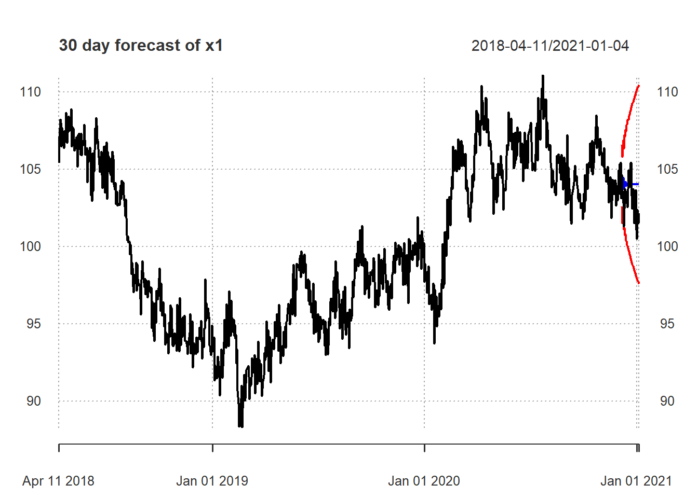
plot(Data_x1_combined ["2020-11/", c("x1", "f_mean", "f_lower", "f_upper")],
major.ticks = "years",
grid.ticks.on = "years",
grid.ticks.lty = 3,
main = "30 day forecast of x1",
col = c("black", "blue", "red", "red"))Forecasting with ARIMA(3,1,3) model for the number of periods higher than 3 (max[3,3]) can be somewhat questionable, since forecasts will converge to the unconditional mean of dependent variable.
Extract Data for Evaluating the Forecast:
Data_x1_Eva <- tail(Data_x1_combined, 30)
Data_x1_Eva x1 f_mean f_lower f_upper
2020-12-06 104.6044 104.5678 102.57601 106.5596
2020-12-07 103.6145 103.6466 101.49883 105.7944
2020-12-08 102.8175 104.4368 101.99142 106.8822
2020-12-09 101.3033 103.7109 101.10645 106.3153
2020-12-10 102.4395 104.1953 101.19974 107.1909
2020-12-11 103.7279 103.9095 100.73484 107.0842
2020-12-12 102.8575 104.1790 100.81371 107.5443
2020-12-13 103.0086 103.9187 100.39564 107.4417
2020-12-14 102.8093 104.0779 100.32971 107.8260
2020-12-15 103.5626 103.9930 100.07959 107.9065
2020-12-16 102.5536 104.0867 100.01662 108.1568
2020-12-17 104.9300 103.9915 99.77576 108.2073
2020-12-18 104.3301 104.0425 99.65953 108.4255
2020-12-19 104.1219 104.0192 99.48927 108.5491
2020-12-20 103.8526 104.0527 99.38456 108.7209
2020-12-21 105.4009 104.0172 99.21605 108.8184
2020-12-22 105.4246 104.0327 99.09200 108.9735
2020-12-23 103.2777 104.0273 98.95505 109.0995
2020-12-24 102.4349 104.0398 98.84219 109.2374
2020-12-25 103.7180 104.0263 98.70667 109.3459
2020-12-26 103.1486 104.0305 98.58755 109.4735
2020-12-27 101.4948 104.0298 98.46733 109.5922
2020-12-28 101.8467 104.0347 98.35688 109.7125
2020-12-29 102.5797 104.0294 98.23877 109.8201
2020-12-30 103.6637 104.0303 98.12723 109.9334
2020-12-31 101.0638 104.0305 98.01739 110.0437
2021-01-01 100.5104 104.0326 97.91216 110.1530
2021-01-02 102.3766 104.0305 97.80481 110.2562
2021-01-03 101.5015 104.0305 97.70053 110.3605
2021-01-04 102.1252 104.0308 97.59824 110.4633Data_x1_Eva$mae <- abs(Data_x1_Eva$x1 - Data_x1_Eva$f_mean)
Data_x1_Eva$mse <- (Data_x1_Eva$x1 - Data_x1_Eva$f_mean) ^ 2
Data_x1_Eva$mape <- abs((Data_x1_Eva$x1 - Data_x1_Eva$f_mean)/Data_x1_Eva$x1)
Data_x1_Eva$amape <- abs((Data_x1_Eva$x1 - Data_x1_Eva$f_mean)/(Data_x1_Eva$x1 + Data_x1_Eva$f_mean))
Data_x1_Eva x1 f_mean f_lower f_upper mae mse
2020-12-06 104.6044 104.5678 102.57601 106.5596 0.03660466 0.001339901
2020-12-07 103.6145 103.6466 101.49883 105.7944 0.03214078 0.001033030
2020-12-08 102.8175 104.4368 101.99142 106.8822 1.61928051 2.622069373
2020-12-09 101.3033 103.7109 101.10645 106.3153 2.40761193 5.796595205
2020-12-10 102.4395 104.1953 101.19974 107.1909 1.75578459 3.082779544
2020-12-11 103.7279 103.9095 100.73484 107.0842 0.18163929 0.032992831
2020-12-12 102.8575 104.1790 100.81371 107.5443 1.32152181 1.746419902
2020-12-13 103.0086 103.9187 100.39564 107.4417 0.91001295 0.828123569
2020-12-14 102.8093 104.0779 100.32971 107.8260 1.26855923 1.609242532
2020-12-15 103.5626 103.9930 100.07959 107.9065 0.43042133 0.185262518
2020-12-16 102.5536 104.0867 100.01662 108.1568 1.53311149 2.350430849
2020-12-17 104.9300 103.9915 99.77576 108.2073 0.93851010 0.880801205
2020-12-18 104.3301 104.0425 99.65953 108.4255 0.28757158 0.082697416
2020-12-19 104.1219 104.0192 99.48927 108.5491 0.10270791 0.010548914
2020-12-20 103.8526 104.0527 99.38456 108.7209 0.20015706 0.040062848
2020-12-21 105.4009 104.0172 99.21605 108.8184 1.38369455 1.914610617
2020-12-22 105.4246 104.0327 99.09200 108.9735 1.39185676 1.937265232
2020-12-23 103.2777 104.0273 98.95505 109.0995 0.74960674 0.561910257
2020-12-24 102.4349 104.0398 98.84219 109.2374 1.60483551 2.575497003
2020-12-25 103.7180 104.0263 98.70667 109.3459 0.30829309 0.095044631
2020-12-26 103.1486 104.0305 98.58755 109.4735 0.88191051 0.777766144
2020-12-27 101.4948 104.0298 98.46733 109.5922 2.53492685 6.425854112
2020-12-28 101.8467 104.0347 98.35688 109.7125 2.18801355 4.787403309
2020-12-29 102.5797 104.0294 98.23877 109.8201 1.44970001 2.101630123
2020-12-30 103.6637 104.0303 98.12723 109.9334 0.36666172 0.134440817
2020-12-31 101.0638 104.0305 98.01739 110.0437 2.96676333 8.801684647
2021-01-01 100.5104 104.0326 97.91216 110.1530 3.52221649 12.406008988
2021-01-02 102.3766 104.0305 97.80481 110.2562 1.65387995 2.735318895
2021-01-03 101.5015 104.0305 97.70053 110.3605 2.52903620 6.396024080
2021-01-04 102.1252 104.0308 97.59824 110.4633 1.90555415 3.631136608
mape amape
2020-12-06 0.0003499342 0.0001749977
2020-12-07 0.0003101958 0.0001550739
2020-12-08 0.0157490725 0.0078130124
2020-12-09 0.0237663751 0.0117436357
2020-12-10 0.0171397199 0.0084970415
2020-12-11 0.0017511137 0.0008747909
2020-12-12 0.0128480866 0.0063830384
2020-12-13 0.0088343360 0.0043977424
2020-12-14 0.0123389531 0.0061316475
2020-12-15 0.0041561456 0.0020737633
2020-12-16 0.0149493696 0.0074192284
2020-12-17 0.0089441500 0.0044921643
2020-12-18 0.0027563633 0.0013800836
2020-12-19 0.0009864198 0.0004934533
2020-12-20 0.0019273194 0.0009627319
2020-12-21 0.0131279183 0.0066073294
2020-12-22 0.0132023912 0.0066450610
2020-12-23 0.0072581686 0.0036159617
2020-12-24 0.0156668747 0.0077725515
2020-12-25 0.0029724173 0.0014840031
2020-12-26 0.0085499008 0.0042567530
2020-12-27 0.0249759214 0.0123339350
2020-12-28 0.0214834099 0.0106275470
2020-12-29 0.0141324215 0.0070166298
2020-12-30 0.0035370320 0.0017653939
2020-12-31 0.0293553610 0.0144653625
2021-01-01 0.0350433171 0.0172199367
2021-01-02 0.0161548571 0.0080127065
2021-01-03 0.0249162464 0.0123048282
2021-01-04 0.0186589942 0.0092432621ARIMA_x1 <- colMeans(Data_x1_Eva[, c("mae", "mse", "mape", "amape")])
ARIMA_x1 mae mse mape amape
1.282086154 2.485066503 0.012528093 0.006212122 Forecast for X2
Assign forecast X2 to object oos_x2
oos_x2 <- out_of_sample$x2
oos_x2 x2
2020-12-06 101.99487
2020-12-07 103.34756
2020-12-08 103.38339
2020-12-09 102.65495
2020-12-10 103.14643
2020-12-11 101.29482
2020-12-12 102.82414
2020-12-13 102.60263
2020-12-14 102.48089
2020-12-15 102.83048
2020-12-16 103.74833
2020-12-17 104.77165
2020-12-18 102.25474
2020-12-19 101.73088
2020-12-20 102.61676
2020-12-21 100.11499
2020-12-22 100.82839
2020-12-23 101.55266
2020-12-24 101.81775
2020-12-25 101.75292
2020-12-26 100.70069
2020-12-27 102.97327
2020-12-28 103.15157
2020-12-29 102.18853
2020-12-30 99.62443
2020-12-31 104.57416
2021-01-01 102.09902
2021-01-02 100.91690
2021-01-03 98.09291
2021-01-04 102.21843tail(Data, 12) x1 x2 x3 x4 x5 x6 x7
2020-11-24 104.3013 104.3355 140.7577 119.5638 114.1140 154.3604 153.2460
2020-11-25 104.1657 105.1016 141.4567 123.3867 113.5237 154.0791 153.7337
2020-11-26 102.6537 104.9208 140.7758 124.4254 112.9245 156.0804 154.2043
2020-11-27 103.2396 105.7320 140.4508 124.7773 114.9400 157.1855 155.4884
2020-11-28 103.6736 102.9653 141.7815 123.5558 115.1752 155.7699 152.7099
2020-11-29 102.9761 104.5524 140.6848 124.9638 113.3780 155.9102 157.3308
2020-11-30 104.9255 102.0271 140.3751 123.5249 114.2484 154.4416 154.2609
2020-12-01 103.4802 102.7281 139.8656 124.8164 115.4927 153.0521 156.7857
2020-12-02 105.3159 103.5042 141.6949 125.9501 113.2420 154.6303 154.1157
2020-12-03 103.3953 102.4242 142.7535 126.2372 112.9752 156.1399 154.1009
2020-12-04 105.4361 102.8317 141.2816 125.7234 115.3071 156.6897 154.6461
2020-12-05 103.1150 101.9375 141.2156 125.2633 115.3152 156.7915 155.2692
x8 x9 x10 dx1 dx2 lresid
2020-11-24 187.7767 45.31686 160.3198 0.2285039 -0.1819140 1.4851947
2020-11-25 188.6371 47.13610 158.2888 -0.1355977 0.7660739 1.0416523
2020-11-26 189.0998 46.20568 159.0346 -1.5119562 -0.1807765 1.9629805
2020-11-27 188.8698 45.66828 158.1373 0.5859083 0.8111557 3.5133371
2020-11-28 187.4831 44.49097 158.9628 0.4339784 -2.7666582 3.6536498
2020-11-29 189.1835 43.55099 158.6368 -0.6975379 1.5870744 0.3901026
2020-11-30 190.5172 42.14053 158.4194 1.9494719 -2.5252541 2.7758317
2020-12-01 187.9916 41.04858 158.8728 -1.4453358 0.7009970 -1.9814946
2020-12-02 189.1746 41.14571 157.2235 1.8357427 0.7760933 0.3743577
2020-12-03 191.1886 41.65493 160.8470 -1.9206885 -1.0800434 -0.9514055
2020-12-04 190.2398 42.99143 159.4651 2.0407973 0.4074824 0.1676674
2020-12-05 188.6125 41.27213 158.3798 -2.3210339 -0.8941768 -1.7614866forecasts_x2 <- forecast(arima510_x2, # model for prediction
h = 30) # how many periods outside the sample
forecasts_x2 Point Forecast Lo 80 Hi 80 Lo 95 Hi 95
971 102.8393 101.51445 104.1641 100.81312 104.8654
972 102.2730 100.86707 103.6789 100.12284 104.4231
973 102.4972 100.94235 104.0521 100.11924 104.8753
974 102.2039 100.54844 103.8593 99.67212 104.7356
975 102.5257 100.57887 104.4725 99.54830 105.5031
976 102.3373 100.27407 104.4006 99.18185 105.4928
977 102.4015 100.21039 104.5925 99.05050 105.7524
978 102.3190 100.01093 104.6271 98.78909 105.8490
979 102.4248 99.95891 104.8908 98.65353 106.1961
980 102.3631 99.78713 104.9392 98.42346 106.3028
981 102.3794 99.69382 105.0650 98.27216 106.4866
982 102.3575 99.56504 105.1500 98.08679 106.6283
983 102.3919 99.48463 105.2992 97.94560 106.8382
984 102.3713 99.36505 105.3775 97.77365 106.9689
985 102.3750 99.27200 105.4781 97.62935 107.1207
986 102.3697 99.17140 105.5680 97.47832 107.2611
987 102.3808 99.08693 105.6747 97.34325 107.4184
988 102.3738 98.99061 105.7569 97.19967 107.5478
989 102.3745 98.90408 105.8450 97.06694 107.6821
990 102.3734 98.81713 105.9297 96.93455 107.8123
991 102.3770 98.73610 106.0179 96.80872 107.9453
992 102.3745 98.65212 106.0970 96.68159 108.0675
993 102.3747 98.57235 106.1770 96.55953 108.1898
994 102.3745 98.49367 106.2554 96.43927 108.3098
995 102.3757 98.41764 106.3337 96.32238 108.4290
996 102.3748 98.34144 106.4082 96.20631 108.5433
997 102.3748 98.26746 106.4821 96.09317 108.6564
998 102.3748 98.19471 106.5550 95.98188 108.7678
999 102.3752 98.12348 106.6269 95.87274 108.8777
1000 102.3749 98.05288 106.6969 95.76495 108.9848Extract the forecast points
forecasts_x2$meanTime Series:
Start = 971
End = 1000
Frequency = 1
[1] 102.8393 102.2730 102.4972 102.2039 102.5257 102.3373 102.4015 102.3190
[9] 102.4248 102.3631 102.3794 102.3575 102.3919 102.3713 102.3750 102.3697
[17] 102.3808 102.3738 102.3745 102.3734 102.3770 102.3745 102.3747 102.3745
[25] 102.3757 102.3748 102.3748 102.3748 102.3752 102.3749class(forecasts_x2$mean)[1] "ts"It is a ts object, not xts! However, the xts objects are more convenient and modern. In terms of plotting the real data and forecast data to compare.
forecasts_x2$lowerTime Series:
Start = 971
End = 1000
Frequency = 1
80% 95%
971 101.51445 100.81312
972 100.86707 100.12284
973 100.94235 100.11924
974 100.54844 99.67212
975 100.57887 99.54830
976 100.27407 99.18185
977 100.21039 99.05050
978 100.01093 98.78909
979 99.95891 98.65353
980 99.78713 98.42346
981 99.69382 98.27216
982 99.56504 98.08679
983 99.48463 97.94560
984 99.36505 97.77365
985 99.27200 97.62935
986 99.17140 97.47832
987 99.08693 97.34325
988 98.99061 97.19967
989 98.90408 97.06694
990 98.81713 96.93455
991 98.73610 96.80872
992 98.65212 96.68159
993 98.57235 96.55953
994 98.49367 96.43927
995 98.41764 96.32238
996 98.34144 96.20631
997 98.26746 96.09317
998 98.19471 95.98188
999 98.12348 95.87274
1000 98.05288 95.76495forecasts_x2$upperTime Series:
Start = 971
End = 1000
Frequency = 1
80% 95%
971 104.1641 104.8654
972 103.6789 104.4231
973 104.0521 104.8753
974 103.8593 104.7356
975 104.4725 105.5031
976 104.4006 105.4928
977 104.5925 105.7524
978 104.6271 105.8490
979 104.8908 106.1961
980 104.9392 106.3028
981 105.0650 106.4866
982 105.1500 106.6283
983 105.2992 106.8382
984 105.3775 106.9689
985 105.4781 107.1207
986 105.5680 107.2611
987 105.6747 107.4184
988 105.7569 107.5478
989 105.8450 107.6821
990 105.9297 107.8123
991 106.0179 107.9453
992 106.0970 108.0675
993 106.1770 108.1898
994 106.2554 108.3098
995 106.3337 108.4290
996 106.4082 108.5433
997 106.4821 108.6564
998 106.5550 108.7678
999 106.6269 108.8777
1000 106.6969 108.9848Create xts object: (We use the second column (95% confidence interval))
forecasts_x2_data <- data.frame(f_mean = as.numeric(forecasts_x2$mean),
f_lower = as.numeric(forecasts_x2$lower[, 2]),
f_upper = as.numeric(forecasts_x2$upper[, 2]))head(forecasts_x2_data,30) f_mean f_lower f_upper
1 102.8393 100.81312 104.8654
2 102.2730 100.12284 104.4231
3 102.4972 100.11924 104.8753
4 102.2039 99.67212 104.7356
5 102.5257 99.54830 105.5031
6 102.3373 99.18185 105.4928
7 102.4015 99.05050 105.7524
8 102.3190 98.78909 105.8490
9 102.4248 98.65353 106.1961
10 102.3631 98.42346 106.3028
11 102.3794 98.27216 106.4866
12 102.3575 98.08679 106.6283
13 102.3919 97.94560 106.8382
14 102.3713 97.77365 106.9689
15 102.3750 97.62935 107.1207
16 102.3697 97.47832 107.2611
17 102.3808 97.34325 107.4184
18 102.3738 97.19967 107.5478
19 102.3745 97.06694 107.6821
20 102.3734 96.93455 107.8123
21 102.3770 96.80872 107.9453
22 102.3745 96.68159 108.0675
23 102.3747 96.55953 108.1898
24 102.3745 96.43927 108.3098
25 102.3757 96.32238 108.4290
26 102.3748 96.20631 108.5433
27 102.3748 96.09317 108.6564
28 102.3748 95.98188 108.7678
29 102.3752 95.87274 108.8777
30 102.3749 95.76495 108.9848Adding real value X2 below the current Dataset:
Data_x2 <- rbind(Data[, "x2"], oos_x2)
tail(Data_x2, n = 40) x2
2020-11-26 104.92083
2020-11-27 105.73198
2020-11-28 102.96533
2020-11-29 104.55240
2020-11-30 102.02715
2020-12-01 102.72814
2020-12-02 103.50424
2020-12-03 102.42419
2020-12-04 102.83168
2020-12-05 101.93750
2020-12-06 101.99487
2020-12-07 103.34756
2020-12-08 103.38339
2020-12-09 102.65495
2020-12-10 103.14643
2020-12-11 101.29482
2020-12-12 102.82414
2020-12-13 102.60263
2020-12-14 102.48089
2020-12-15 102.83048
2020-12-16 103.74833
2020-12-17 104.77165
2020-12-18 102.25474
2020-12-19 101.73088
2020-12-20 102.61676
2020-12-21 100.11499
2020-12-22 100.82839
2020-12-23 101.55266
2020-12-24 101.81775
2020-12-25 101.75292
2020-12-26 100.70069
2020-12-27 102.97327
2020-12-28 103.15157
2020-12-29 102.18853
2020-12-30 99.62443
2020-12-31 104.57416
2021-01-01 102.09902
2021-01-02 100.91690
2021-01-03 98.09291
2021-01-04 102.21843Turn Forecast with Index into Forecast with Date
forecasts_x2_xts <- xts(forecasts_x2_data,
order.by = index(oos_x2))
forecasts_x2_xts f_mean f_lower f_upper
2020-12-06 102.8393 100.81312 104.8654
2020-12-07 102.2730 100.12284 104.4231
2020-12-08 102.4972 100.11924 104.8753
2020-12-09 102.2039 99.67212 104.7356
2020-12-10 102.5257 99.54830 105.5031
2020-12-11 102.3373 99.18185 105.4928
2020-12-12 102.4015 99.05050 105.7524
2020-12-13 102.3190 98.78909 105.8490
2020-12-14 102.4248 98.65353 106.1961
2020-12-15 102.3631 98.42346 106.3028
2020-12-16 102.3794 98.27216 106.4866
2020-12-17 102.3575 98.08679 106.6283
2020-12-18 102.3919 97.94560 106.8382
2020-12-19 102.3713 97.77365 106.9689
2020-12-20 102.3750 97.62935 107.1207
2020-12-21 102.3697 97.47832 107.2611
2020-12-22 102.3808 97.34325 107.4184
2020-12-23 102.3738 97.19967 107.5478
2020-12-24 102.3745 97.06694 107.6821
2020-12-25 102.3734 96.93455 107.8123
2020-12-26 102.3770 96.80872 107.9453
2020-12-27 102.3745 96.68159 108.0675
2020-12-28 102.3747 96.55953 108.1898
2020-12-29 102.3745 96.43927 108.3098
2020-12-30 102.3757 96.32238 108.4290
2020-12-31 102.3748 96.20631 108.5433
2021-01-01 102.3748 96.09317 108.6564
2021-01-02 102.3748 95.98188 108.7678
2021-01-03 102.3752 95.87274 108.8777
2021-01-04 102.3749 95.76495 108.9848Merge it together with the original data
Data_x2_combined <- merge(Data_x2, forecasts_x2_xts)
head(Data_x2_combined) x2 f_mean f_lower f_upper
2018-04-11 109.6174 NA NA NA
2018-04-12 109.9211 NA NA NA
2018-04-13 109.4070 NA NA NA
2018-04-14 108.3335 NA NA NA
2018-04-15 108.4117 NA NA NA
2018-04-16 108.6879 NA NA NAtail(Data_x2_combined,40) x2 f_mean f_lower f_upper
2020-11-26 104.92083 NA NA NA
2020-11-27 105.73198 NA NA NA
2020-11-28 102.96533 NA NA NA
2020-11-29 104.55240 NA NA NA
2020-11-30 102.02715 NA NA NA
2020-12-01 102.72814 NA NA NA
2020-12-02 103.50424 NA NA NA
2020-12-03 102.42419 NA NA NA
2020-12-04 102.83168 NA NA NA
2020-12-05 101.93750 NA NA NA
2020-12-06 101.99487 102.8393 100.81312 104.8654
2020-12-07 103.34756 102.2730 100.12284 104.4231
2020-12-08 103.38339 102.4972 100.11924 104.8753
2020-12-09 102.65495 102.2039 99.67212 104.7356
2020-12-10 103.14643 102.5257 99.54830 105.5031
2020-12-11 101.29482 102.3373 99.18185 105.4928
2020-12-12 102.82414 102.4015 99.05050 105.7524
2020-12-13 102.60263 102.3190 98.78909 105.8490
2020-12-14 102.48089 102.4248 98.65353 106.1961
2020-12-15 102.83048 102.3631 98.42346 106.3028
2020-12-16 103.74833 102.3794 98.27216 106.4866
2020-12-17 104.77165 102.3575 98.08679 106.6283
2020-12-18 102.25474 102.3919 97.94560 106.8382
2020-12-19 101.73088 102.3713 97.77365 106.9689
2020-12-20 102.61676 102.3750 97.62935 107.1207
2020-12-21 100.11499 102.3697 97.47832 107.2611
2020-12-22 100.82839 102.3808 97.34325 107.4184
2020-12-23 101.55266 102.3738 97.19967 107.5478
2020-12-24 101.81775 102.3745 97.06694 107.6821
2020-12-25 101.75292 102.3734 96.93455 107.8123
2020-12-26 100.70069 102.3770 96.80872 107.9453
2020-12-27 102.97327 102.3745 96.68159 108.0675
2020-12-28 103.15157 102.3747 96.55953 108.1898
2020-12-29 102.18853 102.3745 96.43927 108.3098
2020-12-30 99.62443 102.3757 96.32238 108.4290
2020-12-31 104.57416 102.3748 96.20631 108.5433
2021-01-01 102.09902 102.3748 96.09317 108.6564
2021-01-02 100.91690 102.3748 95.98188 108.7678
2021-01-03 98.09291 102.3752 95.87274 108.8777
2021-01-04 102.21843 102.3749 95.76495 108.9848Plot Chart
plot(Data_x2_combined ["2020-11/", c("x2", "f_mean", "f_lower", "f_upper")],
major.ticks = "years",
grid.ticks.on = "years",
grid.ticks.lty = 3,
main = "30 day forecast of x2",
col = c("black", "blue", "red", "red"))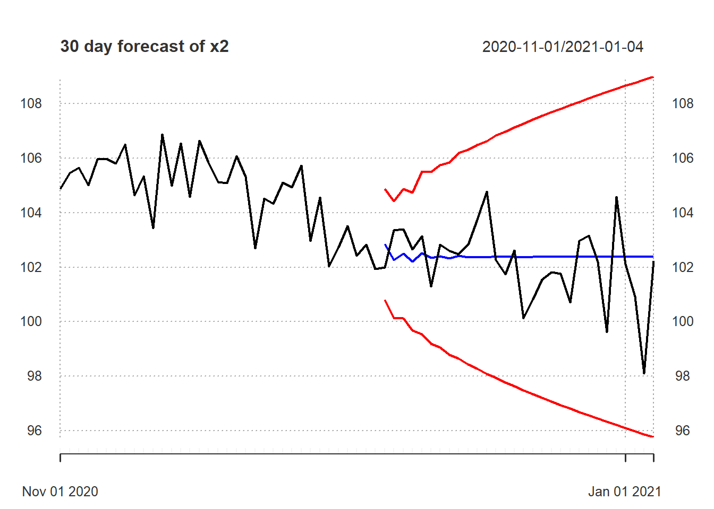
Forecasting with ARIMA(5,1,0) model for the number of periods higher than 5 (max[5,0]) can be somewhat questionable, since forecasts will converge to the unconditional mean of dependent variable.
Extract Data for Evaluating the Forecast:
Data_x2_Eva <- tail(Data_x2_combined, 30)
Data_x2_Eva x2 f_mean f_lower f_upper
2020-12-06 101.99487 102.8393 100.81312 104.8654
2020-12-07 103.34756 102.2730 100.12284 104.4231
2020-12-08 103.38339 102.4972 100.11924 104.8753
2020-12-09 102.65495 102.2039 99.67212 104.7356
2020-12-10 103.14643 102.5257 99.54830 105.5031
2020-12-11 101.29482 102.3373 99.18185 105.4928
2020-12-12 102.82414 102.4015 99.05050 105.7524
2020-12-13 102.60263 102.3190 98.78909 105.8490
2020-12-14 102.48089 102.4248 98.65353 106.1961
2020-12-15 102.83048 102.3631 98.42346 106.3028
2020-12-16 103.74833 102.3794 98.27216 106.4866
2020-12-17 104.77165 102.3575 98.08679 106.6283
2020-12-18 102.25474 102.3919 97.94560 106.8382
2020-12-19 101.73088 102.3713 97.77365 106.9689
2020-12-20 102.61676 102.3750 97.62935 107.1207
2020-12-21 100.11499 102.3697 97.47832 107.2611
2020-12-22 100.82839 102.3808 97.34325 107.4184
2020-12-23 101.55266 102.3738 97.19967 107.5478
2020-12-24 101.81775 102.3745 97.06694 107.6821
2020-12-25 101.75292 102.3734 96.93455 107.8123
2020-12-26 100.70069 102.3770 96.80872 107.9453
2020-12-27 102.97327 102.3745 96.68159 108.0675
2020-12-28 103.15157 102.3747 96.55953 108.1898
2020-12-29 102.18853 102.3745 96.43927 108.3098
2020-12-30 99.62443 102.3757 96.32238 108.4290
2020-12-31 104.57416 102.3748 96.20631 108.5433
2021-01-01 102.09902 102.3748 96.09317 108.6564
2021-01-02 100.91690 102.3748 95.98188 108.7678
2021-01-03 98.09291 102.3752 95.87274 108.8777
2021-01-04 102.21843 102.3749 95.76495 108.9848Data_x2_Eva$mae <- abs(Data_x2_Eva$x2 - Data_x2_Eva$f_mean)
Data_x2_Eva$mse <- (Data_x2_Eva$x2 - Data_x2_Eva$f_mean) ^ 2
Data_x2_Eva$mape <- abs((Data_x2_Eva$x2 - Data_x2_Eva$f_mean)/Data_x2_Eva$x2)
Data_x2_Eva$amape <- abs((Data_x2_Eva$x2 - Data_x2_Eva$f_mean)/(Data_x2_Eva$x2 + Data_x2_Eva$f_mean))
Data_x2_Eva x2 f_mean f_lower f_upper mae mse
2020-12-06 101.99487 102.8393 100.81312 104.8654 0.84440428 0.713018594
2020-12-07 103.34756 102.2730 100.12284 104.4231 1.07459191 1.154747779
2020-12-08 103.38339 102.4972 100.11924 104.8753 0.88613819 0.785240898
2020-12-09 102.65495 102.2039 99.67212 104.7356 0.45108762 0.203480039
2020-12-10 103.14643 102.5257 99.54830 105.5031 0.62075767 0.385340080
2020-12-11 101.29482 102.3373 99.18185 105.4928 1.04250402 1.086814624
2020-12-12 102.82414 102.4015 99.05050 105.7524 0.42267568 0.178654727
2020-12-13 102.60263 102.3190 98.78909 105.8490 0.28359718 0.080427363
2020-12-14 102.48089 102.4248 98.65353 106.1961 0.05605681 0.003142366
2020-12-15 102.83048 102.3631 98.42346 106.3028 0.46733257 0.218399735
2020-12-16 103.74833 102.3794 98.27216 106.4866 1.36894247 1.874003492
2020-12-17 104.77165 102.3575 98.08679 106.6283 2.41410282 5.827892427
2020-12-18 102.25474 102.3919 97.94560 106.8382 0.13717593 0.018817235
2020-12-19 101.73088 102.3713 97.77365 106.9689 0.64039817 0.410109819
2020-12-20 102.61676 102.3750 97.62935 107.1207 0.24173247 0.058434587
2020-12-21 100.11499 102.3697 97.47832 107.2611 2.25470204 5.083681304
2020-12-22 100.82839 102.3808 97.34325 107.4184 1.55243228 2.410045994
2020-12-23 101.55266 102.3738 97.19967 107.5478 0.82109757 0.674201215
2020-12-24 101.81775 102.3745 97.06694 107.6821 0.55676647 0.309988905
2020-12-25 101.75292 102.3734 96.93455 107.8123 0.62050327 0.385024305
2020-12-26 100.70069 102.3770 96.80872 107.9453 1.67632087 2.810051675
2020-12-27 102.97327 102.3745 96.68159 108.0675 0.59873445 0.358482936
2020-12-28 103.15157 102.3747 96.55953 108.1898 0.77691565 0.603597926
2020-12-29 102.18853 102.3745 96.43927 108.3098 0.18600274 0.034597021
2020-12-30 99.62443 102.3757 96.32238 108.4290 2.75124974 7.569375138
2020-12-31 104.57416 102.3748 96.20631 108.5433 2.19935975 4.837183304
2021-01-01 102.09902 102.3748 96.09317 108.6564 0.27578302 0.076056276
2021-01-02 100.91690 102.3748 95.98188 108.7678 1.45794267 2.125596825
2021-01-03 98.09291 102.3752 95.87274 108.8777 4.28229936 18.338087848
2021-01-04 102.21843 102.3749 95.76495 108.9848 0.15646094 0.024480026
mape amape
2020-12-06 0.0082788895 0.0041223804
2020-12-07 0.0103978453 0.0052260927
2020-12-08 0.0085713790 0.0043041357
2020-12-09 0.0043942120 0.0022019439
2020-12-10 0.0060182175 0.0030181908
2020-12-11 0.0102917805 0.0051195456
2020-12-12 0.0041106659 0.0020595661
2020-12-13 0.0027640341 0.0013839297
2020-12-14 0.0005469977 0.0002735737
2020-12-15 0.0045446891 0.0022775199
2020-12-16 0.0131948382 0.0066412341
2020-12-17 0.0230415664 0.0116550586
2020-12-18 0.0013415117 0.0006703062
2020-12-19 0.0062950225 0.0031376355
2020-12-20 0.0023556821 0.0011792300
2020-12-21 0.0225211227 0.0111351731
2020-12-22 0.0153967770 0.0076395761
2020-12-23 0.0080854363 0.0040264404
2020-12-24 0.0054682654 0.0027266776
2020-12-25 0.0060981374 0.0030398001
2020-12-26 0.0166465680 0.0082545788
2020-12-27 0.0058144646 0.0029157089
2020-12-28 0.0075317870 0.0037801291
2020-12-29 0.0018201921 0.0009092685
2020-12-30 0.0276162157 0.0136200409
2020-12-31 0.0210315797 0.0106275469
2021-01-01 0.0027011329 0.0013487449
2021-01-02 0.0144469619 0.0071716765
2021-01-03 0.0436555433 0.0213614978
2021-01-04 0.0015306529 0.0007647412ARIMA_x2 <- colMeans(Data_x2_Eva[, c("mae", "mse", "mape", "amape")])
ARIMA_x2 mae mse mape amape
1.037268955 1.954632482 0.010217072 0.005086398 5. VECM Model and Analysis
5.1. Johansen Cointegration Test
Determine the lag for Johansen test:
VARselect(Data[,1:2],
lag.max = 7)$selection
AIC(n) HQ(n) SC(n) FPE(n)
6 6 5 6
$criteria
1 2 3 4 5 6 7
AIC(n) 0.8952490 0.2695796 0.2436797 0.07889688 0.0553301 0.03714266 0.04116647
HQ(n) 0.9068026 0.2888355 0.2706379 0.11355751 0.0976931 0.08720801 0.09893419
SC(n) 0.9255921 0.3201513 0.3144800 0.16992592 0.1665878 0.16862904 0.19288153
FPE(n) 2.4479455 1.3094141 1.2759362 1.08209391 1.0568915 1.03784447 1.04203081Three out of four tests suggest K = 6.
We will choose the K=6 lag structure:
johan.test.trace <-
ca.jo(Data[,1:2], # data
ecdet = "const", # "const" for constant term in cointegrating equation
type = "trace",
K = 6 # lag order of the series (levels) in the VAR
)
summary(johan.test.trace)
######################
# Johansen-Procedure #
######################
Test type: trace statistic , without linear trend and constant in cointegration
Eigenvalues (lambda):
[1] 5.327670e-02 3.750917e-03 3.797504e-19
Values of teststatistic and critical values of test:
test 10pct 5pct 1pct
r <= 1 | 3.62 7.52 9.24 12.97
r = 0 | 56.40 17.85 19.96 24.60
Eigenvectors, normalised to first column:
(These are the cointegration relations)
x1.l6 x2.l6 constant
x1.l6 1.0000000 1.000000 1.000000
x2.l6 -0.7769762 1.079965 -2.614802
constant -23.6658920 -204.788105 253.716917
Weights W:
(This is the loading matrix)
x1.l6 x2.l6 constant
x1.d -0.008001286 -0.0050723664 -2.360290e-18
x2.d 0.127375901 -0.0002914929 9.264392e-17cbind(summary(johan.test.trace)@teststat,
summary(johan.test.trace)@cval) 10pct 5pct 1pct
r <= 1 | 3.622683 7.52 9.24 12.97
r = 0 | 56.400153 17.85 19.96 24.60Test Statistic < Critical Value: CANNOT reject the null
Test Statistic > Critical Value: reject the null
First we start with r=0, (no cointegrating vector): t-test statistic > Critical value: we reject the null hypothesis about NO cointerating vector.
Next, we test the hypothesis of r=1: Test Statistic < Critical Value: we CANNOT reject the null about 1 cointegrating vector.
The model has ONLY 1 cointegrating vector.
summary(johan.test.trace)@V x1.l6 x2.l6 constant
x1.l6 1.0000000 1.000000 1.000000
x2.l6 -0.7769762 1.079965 -2.614802
constant -23.6658920 -204.788105 253.716917Weights W:
summary(johan.test.trace)@W x1.l6 x2.l6 constant
x1.d -0.008001286 -0.0050723664 -2.360290e-18
x2.d 0.127375901 -0.0002914929 9.264392e-17Check for another type of test: for Eigen:
johan.test.eigen <-
ca.jo(Data[,1:2], # data
ecdet = "const", # "const" for constant term in cointegrating equation
type = "eigen",
K = 6 # lag order of the series (levels) in the VAR
)
summary(johan.test.eigen)
######################
# Johansen-Procedure #
######################
Test type: maximal eigenvalue statistic (lambda max) , without linear trend and constant in cointegration
Eigenvalues (lambda):
[1] 5.327670e-02 3.750917e-03 3.797504e-19
Values of teststatistic and critical values of test:
test 10pct 5pct 1pct
r <= 1 | 3.62 7.52 9.24 12.97
r = 0 | 52.78 13.75 15.67 20.20
Eigenvectors, normalised to first column:
(These are the cointegration relations)
x1.l6 x2.l6 constant
x1.l6 1.0000000 1.000000 1.000000
x2.l6 -0.7769762 1.079965 -2.614802
constant -23.6658920 -204.788105 253.716917
Weights W:
(This is the loading matrix)
x1.l6 x2.l6 constant
x1.d -0.008001286 -0.0050723664 -2.360290e-18
x2.d 0.127375901 -0.0002914929 9.264392e-17The conclusion stays the same: There is only one cointegrating vector.
5.2. VECM Model
Define the specification of the VECM model, with cointegrating vector from either trace or eigen test from Johansen test.
Data.vec6 <- cajorls(johan.test.eigen, # defined specification
r = 1) # number of cointegrating vectors
summary(Data.vec6) Length Class Mode
rlm 12 mlm list
beta 3 -none- numericSummary results:
summary(Data.vec6$rlm)Response x1.d :
Call:
lm(formula = x1.d ~ ect1 + x1.dl1 + x2.dl1 + x1.dl2 + x2.dl2 +
x1.dl3 + x2.dl3 + x1.dl4 + x2.dl4 + x1.dl5 + x2.dl5 - 1,
data = data.mat)
Residuals:
Min 1Q Median 3Q Max
-3.6229 -0.6404 -0.0185 0.6448 3.1156
Coefficients:
Estimate Std. Error t value Pr(>|t|)
ect1 -0.008001 0.017896 -0.447 0.65490
x1.dl1 -0.597241 0.032149 -18.577 < 2e-16 ***
x2.dl1 0.022922 0.033115 0.692 0.48899
x1.dl2 -0.169316 0.036961 -4.581 5.24e-06 ***
x2.dl2 -0.011240 0.040525 -0.277 0.78156
x1.dl3 -0.123468 0.037689 -3.276 0.00109 **
x2.dl3 -0.015389 0.042094 -0.366 0.71475
x1.dl4 0.192674 0.038085 5.059 5.05e-07 ***
x2.dl4 -0.072815 0.042015 -1.733 0.08341 .
x1.dl5 0.102480 0.034159 3.000 0.00277 **
x2.dl5 -0.060323 0.035927 -1.679 0.09347 .
---
Signif. codes: 0 '***' 0.001 '**' 0.01 '*' 0.05 '.' 0.1 ' ' 1
Residual standard error: 1.016 on 953 degrees of freedom
Multiple R-squared: 0.3641, Adjusted R-squared: 0.3567
F-statistic: 49.6 on 11 and 953 DF, p-value: < 2.2e-16
Response x2.d :
Call:
lm(formula = x2.d ~ ect1 + x1.dl1 + x2.dl1 + x1.dl2 + x2.dl2 +
x1.dl3 + x2.dl3 + x1.dl4 + x2.dl4 + x1.dl5 + x2.dl5 - 1,
data = data.mat)
Residuals:
Min 1Q Median 3Q Max
-2.77300 -0.64814 0.01029 0.67165 2.88981
Coefficients:
Estimate Std. Error t value Pr(>|t|)
ect1 0.127376 0.017424 7.311 5.63e-13 ***
x1.dl1 0.035245 0.031300 1.126 0.2604
x2.dl1 -0.729593 0.032242 -22.629 < 2e-16 ***
x1.dl2 0.198563 0.035986 5.518 4.42e-08 ***
x2.dl2 -0.400538 0.039456 -10.152 < 2e-16 ***
x1.dl3 0.212915 0.036694 5.802 8.89e-09 ***
x2.dl3 -0.303041 0.040983 -7.394 3.11e-13 ***
x1.dl4 0.150872 0.037080 4.069 5.12e-05 ***
x2.dl4 0.079746 0.040906 1.949 0.0515 .
x1.dl5 0.158115 0.033257 4.754 2.30e-06 ***
x2.dl5 -0.005628 0.034979 -0.161 0.8722
---
Signif. codes: 0 '***' 0.001 '**' 0.01 '*' 0.05 '.' 0.1 ' ' 1
Residual standard error: 0.9889 on 953 degrees of freedom
Multiple R-squared: 0.4524, Adjusted R-squared: 0.446
F-statistic: 71.56 on 11 and 953 DF, p-value: < 2.2e-16extract the cointegrating vector:
Data.vec6$beta ect1
x1.l6 1.0000000
x2.l6 -0.7769762
constant -23.6658920extract the adjustment coefficients (check for sign to determine whether ECM works or not):
johan.test.eigen@W x1.l6 x2.l6 constant
x1.d -0.008001286 -0.0050723664 -2.360290e-18
x2.d 0.127375901 -0.0002914929 9.264392e-17Conclusion about whether Error Correction Mechanism work: The adjustment Coeff has different sign here -> ECM works.
Reparametrizing the VEC model into VAR:
Data.vec6.asVAR <- vec2var(johan.test.eigen, r = 1)Check result:
Data.vec6.asVAR
Coefficient matrix of lagged endogenous variables:
A1:
x1.l1 x2.l1
x1 0.40275879 0.02292209
x2 0.03524544 0.27040741
A2:
x1.l2 x2.l2
x1 0.4279249 -0.03416221
x2 0.1633176 0.32905429
A3:
x1.l3 x2.l3
x1 0.04584829 -0.004149253
x2 0.01435199 0.097497511
A4:
x1.l4 x2.l4
x1 0.31614231 -0.05742534
x2 -0.06204285 0.38278641
A5:
x1.l5 x2.l5
x1 -0.090194324 0.01249198
x2 0.007242869 -0.08537378
A6:
x1.l6 x2.l6
x1 -0.11048130 0.06653954
x2 -0.03073914 -0.09333988
Coefficient matrix of deterministic regressor(s).
constant
x1 0.1893576
x2 -3.0144643Calculate and plot Impulse Response Functions:
plot(irf(Data.vec6.asVAR, n.ahead = 36), ask = FALSE)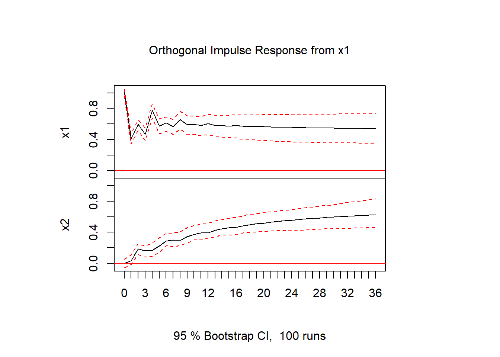
The residuals seem to be stable: after it increases in a couple of period, it then decreases.
Perform forecast error variance decomposition:
plot(fevd(Data.vec6.asVAR, n.ahead = 36), ask = FALSE)The forecast error variance decomposition for X1 is mostly explained by X1. As X2 does not granger cause X1. Meanwhile, because X1 does granger cause X2, the forecast error variance decomposition for X2 is explained by both X1 and X2.
Check if model residuals are auto-correlated or not: Residuals can be extracted only from the VAR reparametrized model.
head(residuals(Data.vec6.asVAR)) resids of x1 resids of x2
[1,] -0.8484499 -0.7442952
[2,] -0.4114669 -0.6779789
[3,] 0.1044630 -1.4051325
[4,] -0.7057218 1.1074373
[5,] 0.7418924 -0.7982018
[6,] -0.1534021 -0.4547940serial.test(Data.vec6.asVAR)
Portmanteau Test (asymptotic)
data: Residuals of VAR object Data.vec6.asVAR
Chi-squared = 37.666, df = 42, p-value = 0.6616p-value = 0.6616 > p-critical = 5%
The null about no-autocorrelation is fail to Reject.
=> There is no auto-correlation in Residuals.
Plot ACF and PACF for the model:
plot(serial.test(Data.vec6.asVAR))
Checking the Nomarlity for x1 and x2 by creating Histogram:
Data.vec6.asVAR %>%
residuals() %>%
as_tibble() %>%
ggplot(aes(`resids of x1`)) +
geom_histogram(aes(y =..density..),
colour = "black",
fill = "pink") +
stat_function(fun = dnorm,
args = list(mean = mean(residuals(Data.vec6.asVAR)[, 1]),
sd = sd(residuals(Data.vec6.asVAR)[, 1]))) +
theme_bw() +
labs(
title = "Density of x1 residuals",
y = "", x = "",
caption = "source: own calculations"
)Warning: The dot-dot notation (`..density..`) was deprecated in ggplot2 3.4.0.
ℹ Please use `after_stat(density)` instead.`stat_bin()` using `bins = 30`. Pick better value with `binwidth`.Data.vec6.asVAR %>%
residuals() %>%
as_tibble() %>%
ggplot(aes(`resids of x2`)) +
geom_histogram(aes(y =..density..),
colour = "black",
fill = "pink") +
stat_function(fun = dnorm,
args = list(mean = mean(residuals(Data.vec6.asVAR)[, 2]),
sd = sd(residuals(Data.vec6.asVAR)[, 2]))) +
theme_bw() +
labs(
title = "Density of x2 residuals",
y = "", x = "",
caption = "source: own calculations"
)`stat_bin()` using `bins = 30`. Pick better value with `binwidth`.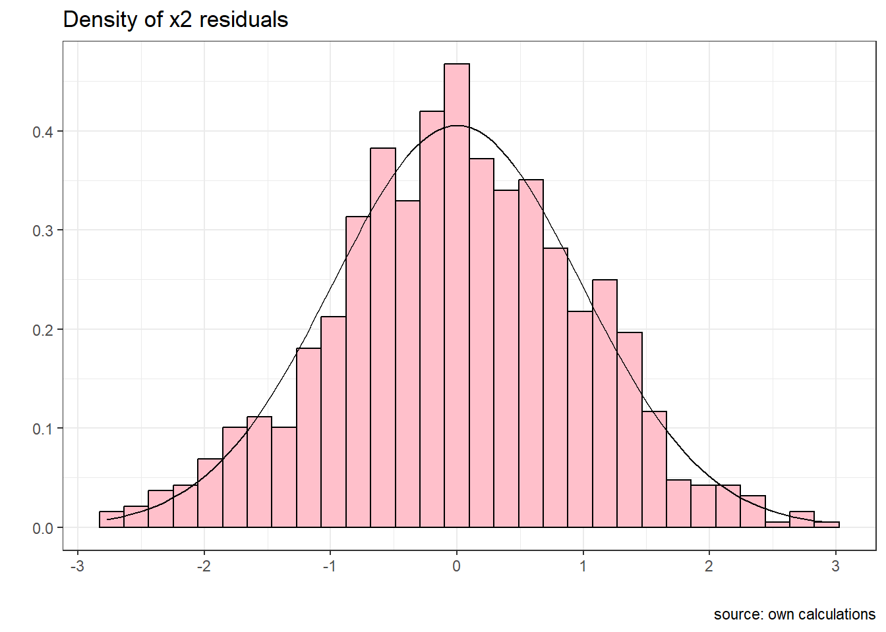
We can also check it formally by using the Jarque-Bera (JB) test.
normality.test(Data.vec6.asVAR)$JB
JB-Test (multivariate)
data: Residuals of VAR object Data.vec6.asVAR
Chi-squared = 0.8198, df = 4, p-value = 0.9358
$Skewness
Skewness only (multivariate)
data: Residuals of VAR object Data.vec6.asVAR
Chi-squared = 0.52028, df = 2, p-value = 0.7709
$Kurtosis
Kurtosis only (multivariate)
data: Residuals of VAR object Data.vec6.asVAR
Chi-squared = 0.29952, df = 2, p-value = 0.8609p-value > 0.05 => Fail to reject Ho about the normality
Conclusion: the residuals have a normal distribution.
5.3 VECM Forecasting
Data.vec6.fore <-
predict(
vec2var(
johan.test.eigen,
r = 1), # no of cointegrating vectors
n.ahead = 30, # forecast horizon
ci = 0.95) # confidence level for intervals
summary(Data.vec6.fore) Length Class Mode
fcst 2 -none- list
endog 1940 -none- numeric
model 12 vec2var list
exo.fcst 0 -none- NULL VEC forecasts for x1
Data.vec6.fore$fcst$x1 fcst lower upper CI
[1,] 104.4753 102.49586 106.4547 1.979405
[2,] 103.6826 101.54823 105.8169 2.134341
[3,] 104.4214 101.98719 106.8555 2.434163
[4,] 103.7435 101.14509 106.3419 2.598400
[5,] 104.1078 101.09226 107.1234 3.015553
[6,] 103.8848 100.66734 107.1023 3.217457
[7,] 104.1109 100.67626 107.5455 3.434638
[8,] 103.9060 100.29479 107.5172 3.611197
[9,] 103.9979 100.16297 107.8328 3.834915
[10,] 103.9318 99.92567 107.9380 4.006172
[11,] 104.0007 99.82811 108.1733 4.172580
[12,] 103.9341 99.60896 108.2593 4.325175
[13,] 103.9541 99.46903 108.4392 4.485065
[14,] 103.9335 99.30547 108.5615 4.628038
[15,] 103.9530 99.18763 108.7184 4.765388
[16,] 103.9295 99.03302 108.8259 4.896441
[17,] 103.9313 98.90472 108.9580 5.026615
[18,] 103.9240 98.77437 109.0736 5.149603
[19,] 103.9282 98.65988 109.1966 5.268371
[20,] 103.9187 98.53532 109.3021 5.383397
[21,] 103.9168 98.42060 109.4130 5.496178
[22,] 103.9133 98.30828 109.5184 5.605040
[23,] 103.9132 98.20229 109.6240 5.710869
[24,] 103.9086 98.09446 109.7226 5.814089
[25,] 103.9063 97.99114 109.8215 5.915171
[26,] 103.9041 97.89045 109.9178 6.013697
[27,] 103.9029 97.79293 110.0129 6.109991
[28,] 103.9003 97.69596 110.1046 6.204314
[29,] 103.8984 97.60157 110.1953 6.296853
[30,] 103.8968 97.50931 110.2844 6.387536VEC forecasts for x2
Data.vec6.fore$fcst$x2 fcst lower upper CI
[1,] 103.0279 101.10074 104.9551 1.927173
[2,] 102.3982 100.40064 104.3958 1.997568
[3,] 102.6393 100.46457 104.8139 2.174685
[4,] 102.4612 100.18883 104.7336 2.272381
[5,] 102.8081 100.22055 105.3957 2.587584
[6,] 102.6593 99.96367 105.3549 2.695634
[7,] 102.7086 99.87473 105.5425 2.833893
[8,] 102.7254 99.77097 105.6799 2.954443
[9,] 102.8334 99.72424 105.9427 3.109206
[10,] 102.8134 99.58622 106.0405 3.227131
[11,] 102.8272 99.47429 106.1801 3.352919
[12,] 102.8651 99.38871 106.3416 3.476436
[13,] 102.9071 99.30352 106.5108 3.603621
[14,] 102.9157 99.18963 106.6418 3.726104
[15,] 102.9265 99.07559 106.7774 3.850920
[16,] 102.9558 98.97979 106.9319 3.976046
[17,] 102.9779 98.87713 107.0787 4.100780
[18,] 102.9907 98.76475 107.2167 4.225966
[19,] 103.0015 98.64961 107.3534 4.351898
[20,] 103.0215 98.54342 107.4996 4.478083
[21,] 103.0360 98.43237 107.6397 4.603656
[22,] 103.0475 98.31773 107.7772 4.729756
[23,] 103.0573 98.20144 107.9132 4.855899
[24,] 103.0710 98.08911 108.0529 4.981873
[25,] 103.0816 97.97432 108.1888 5.107234
[26,] 103.0908 97.85826 108.3234 5.232548
[27,] 103.0991 97.74162 108.4566 5.357468
[28,] 103.1087 97.62681 108.5905 5.481867
[29,] 103.1167 97.51110 108.7222 5.605549
[30,] 103.1239 97.39514 108.8526 5.728736Lets store it as an xts object. The correct set of dates (index) can be extracted from the out_of_sample xts data object.
tail(index(out_of_sample), 30) [1] "2020-12-06" "2020-12-07" "2020-12-08" "2020-12-09" "2020-12-10"
[6] "2020-12-11" "2020-12-12" "2020-12-13" "2020-12-14" "2020-12-15"
[11] "2020-12-16" "2020-12-17" "2020-12-18" "2020-12-19" "2020-12-20"
[16] "2020-12-21" "2020-12-22" "2020-12-23" "2020-12-24" "2020-12-25"
[21] "2020-12-26" "2020-12-27" "2020-12-28" "2020-12-29" "2020-12-30"
[26] "2020-12-31" "2021-01-01" "2021-01-02" "2021-01-03" "2021-01-04"x1_forecast <- xts(Data.vec6.fore$fcst$x1[,-4],
tail(index(out_of_sample), 30))Correction of the variable names:
names(x1_forecast) <- c("x1_fore", "x1_lower", "x1_upper")Apply similarly for x2:
x2_forecast <- xts(Data.vec6.fore$fcst$x2[, -4],
tail(index(out_of_sample), 30))
names(x2_forecast) <- c("x2_fore", "x2_lower", "x2_upper")Merge forecast into orignial data:
Data.fore <- merge(out_of_sample[,1:2],
x1_forecast,
x2_forecast)tail(Data.fore,40) x1 x2 x1_fore x1_lower x1_upper x2_fore x2_lower
2020-12-06 104.6044 101.99487 104.4753 102.49586 106.4547 103.0279 101.10074
2020-12-07 103.6145 103.34756 103.6826 101.54823 105.8169 102.3982 100.40064
2020-12-08 102.8175 103.38339 104.4214 101.98719 106.8555 102.6393 100.46457
2020-12-09 101.3033 102.65495 103.7435 101.14509 106.3419 102.4612 100.18883
2020-12-10 102.4395 103.14643 104.1078 101.09226 107.1234 102.8081 100.22055
2020-12-11 103.7279 101.29482 103.8848 100.66734 107.1023 102.6593 99.96367
2020-12-12 102.8575 102.82414 104.1109 100.67626 107.5455 102.7086 99.87473
2020-12-13 103.0086 102.60263 103.9060 100.29479 107.5172 102.7254 99.77097
2020-12-14 102.8093 102.48089 103.9979 100.16297 107.8328 102.8334 99.72424
2020-12-15 103.5626 102.83048 103.9318 99.92567 107.9380 102.8134 99.58622
2020-12-16 102.5536 103.74833 104.0007 99.82811 108.1733 102.8272 99.47429
2020-12-17 104.9300 104.77165 103.9341 99.60896 108.2593 102.8651 99.38871
2020-12-18 104.3301 102.25474 103.9541 99.46903 108.4392 102.9071 99.30352
2020-12-19 104.1219 101.73088 103.9335 99.30547 108.5615 102.9157 99.18963
2020-12-20 103.8526 102.61676 103.9530 99.18763 108.7184 102.9265 99.07559
2020-12-21 105.4009 100.11499 103.9295 99.03302 108.8259 102.9558 98.97979
2020-12-22 105.4246 100.82839 103.9313 98.90472 108.9580 102.9779 98.87713
2020-12-23 103.2777 101.55266 103.9240 98.77437 109.0736 102.9907 98.76475
2020-12-24 102.4349 101.81775 103.9282 98.65988 109.1966 103.0015 98.64961
2020-12-25 103.7180 101.75292 103.9187 98.53532 109.3021 103.0215 98.54342
2020-12-26 103.1486 100.70069 103.9168 98.42060 109.4130 103.0360 98.43237
2020-12-27 101.4948 102.97327 103.9133 98.30828 109.5184 103.0475 98.31773
2020-12-28 101.8467 103.15157 103.9132 98.20229 109.6240 103.0573 98.20144
2020-12-29 102.5797 102.18853 103.9086 98.09446 109.7226 103.0710 98.08911
2020-12-30 103.6637 99.62443 103.9063 97.99114 109.8215 103.0816 97.97432
2020-12-31 101.0638 104.57416 103.9041 97.89045 109.9178 103.0908 97.85826
2021-01-01 100.5104 102.09902 103.9029 97.79293 110.0129 103.0991 97.74162
2021-01-02 102.3766 100.91690 103.9003 97.69596 110.1046 103.1087 97.62681
2021-01-03 101.5015 98.09291 103.8984 97.60157 110.1953 103.1167 97.51110
2021-01-04 102.1252 102.21843 103.8968 97.50931 110.2844 103.1239 97.39514
x2_upper
2020-12-06 104.9551
2020-12-07 104.3958
2020-12-08 104.8139
2020-12-09 104.7336
2020-12-10 105.3957
2020-12-11 105.3549
2020-12-12 105.5425
2020-12-13 105.6799
2020-12-14 105.9427
2020-12-15 106.0405
2020-12-16 106.1801
2020-12-17 106.3416
2020-12-18 106.5108
2020-12-19 106.6418
2020-12-20 106.7774
2020-12-21 106.9319
2020-12-22 107.0787
2020-12-23 107.2167
2020-12-24 107.3534
2020-12-25 107.4996
2020-12-26 107.6397
2020-12-27 107.7772
2020-12-28 107.9132
2020-12-29 108.0529
2020-12-30 108.1888
2020-12-31 108.3234
2021-01-01 108.4566
2021-01-02 108.5905
2021-01-03 108.7222
2021-01-04 108.8526Plot chart for Forecast:
plot(Data.fore ["2020-11/", c("x1", "x1_fore", "x1_lower", "x1_upper")],
major.ticks = "years",
grid.ticks.on = "years",
grid.ticks.lty = 3,
main = "30 day forecast of x1",
col = c("black", "blue", "red", "red"))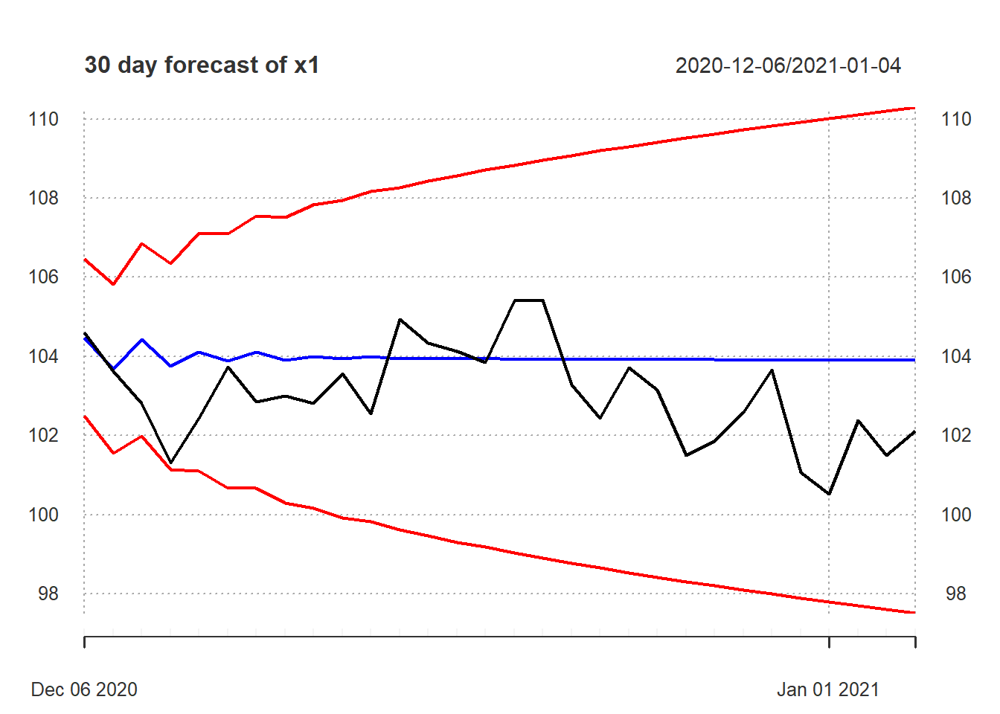
plot(Data.fore ["2020-11/", c("x2", "x2_fore", "x2_lower", "x2_upper")],
major.ticks = "years",
grid.ticks.on = "years",
grid.ticks.lty = 3,
main = "30 day forecast of x2",
col = c("black", "blue", "red", "red"))5.4. Evaluate Forecast Accuracy
Extract the out-of-sample data to evaluate:
Data.fore2 <- Data.fore[,-30]Data.fore2$mae.x1 <- abs(Data.fore2$x1 - Data.fore2$x1_fore)
Data.fore2$mse.x1 <- (Data.fore2$x1 - Data.fore2$x1_fore)^2
Data.fore2$mape.x1 <- abs(Data.fore2$x1 - Data.fore2$x1_fore)/Data.fore2$x1
Data.fore2$amape.x1 <- abs(Data.fore2$x1 - Data.fore2$x1_fore)/(Data.fore2$x1 + Data.fore2$x1_fore)Data.fore2$mae.x2 <- abs(Data.fore2$x2 - Data.fore2$x2_fore)
Data.fore2$mse.x2 <- (Data.fore2$x2 - Data.fore2$x2_fore)^2
Data.fore2$mape.x2 <- abs(Data.fore2$x2 - Data.fore2$x2_fore)/Data.fore2$x2
Data.fore2$amape.x2 <- abs(Data.fore2$x2 - Data.fore2$x2_fore)/(Data.fore2$x2 + Data.fore2$x2_fore)and calculate its averages
VECM_x1 <- colMeans(Data.fore2[, c("mae.x1",
"mse.x1",
"mape.x1",
"amape.x1")], na.rm = TRUE)VECM_x2 <- colMeans(Data.fore2[, c("mae.x2",
"mse.x2",
"mape.x2",
"amape.x2")], na.rm = TRUE) 6. Comparing Models
Comparing VECM model’s forecasts with ARIMAs:
result <- rbind(ARIMA_x1,VECM_x1, ARIMA_x2,VECM_x2)
result %>%
knitr::kable(digits = 4) %>%
kableExtra::kable_styling(full_width = F,
bootstrap_options = c("striped",
"hover",
"condensed"))| mae | mse | mape | amape | |
|---|---|---|---|---|
| ARIMA_x1 | 1.2821 | 2.4851 | 0.0125 | 0.0062 |
| VECM_x1 | 1.2313 | 2.2985 | 0.0120 | 0.0060 |
| ARIMA_x2 | 1.0373 | 1.9546 | 0.0102 | 0.0051 |
| VECM_x2 | 1.2178 | 2.7043 | 0.0120 | 0.0060 |
Conclusion:
For Time series x1: The forecasts from VECM outperforms that of ARIMA.
For Time series x2: The forecasts from ARIMA model outperforms that of VECM.